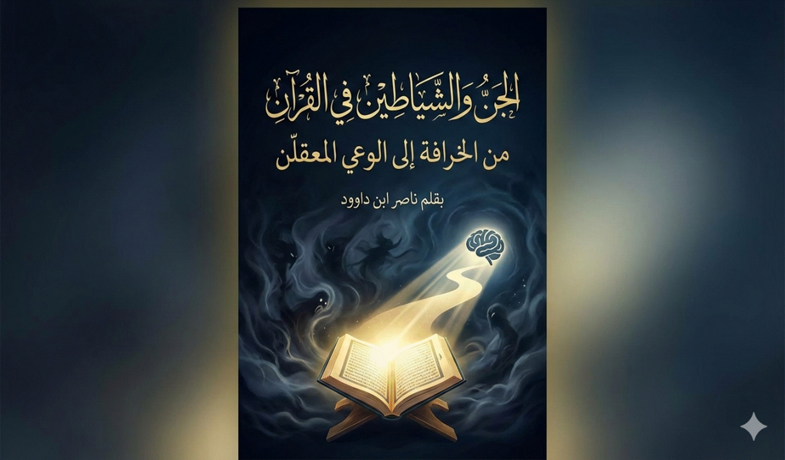

كيف يحرر القرآن الإنسان من الرعب الغيبي؟
عزيزي القارئ،
في عالمنا اليوم، حيث تمتزج الحكايات الشعبية بالروايات الدينية، غالباً ما نجد أنفسنا محاصرين بصور نمطية عن "الجن" والشياطين: كائنات مرعبة تتسلل في الظلام، أو أرواح شريرة تسيطر على حياتنا. من قصص الأجداد عن "العفاريت" إلى أفلام الرعب الحديثة، أصبح هذا العالم الغيبي مصدر خوف أكثر منه مصدر تأمل. لكن هل هذا التصور يعكس حقيقة ما جاء في القرآن الكريم؟ أم أنه نتاج تراكمات ثقافية وخرافات متراكمة عبر العصور؟
في كتابي هذا، "الجن والشياطين في القرآن: من الخرافة إلى الوعي المعقلن"، أدعوك إلى رحلة ممتعة ومفيدة لإعادة اكتشاف هذه المفاهيم من خلال النص القرآني نفسه. لن نعتمد على الروايات الشفهية أو التفسيرات التقليدية السطحية، بل سنعود إلى أصول اللغة العربية والسياقات القرآنية لنفهم "الجن" كما يجب: ليس ككائنات خارقة مرعبة، بل كرمز للخفاء والنفس البشرية، والشياطين كصفة للتمرد والإغواء الذي قد يوجد داخل كل منا.
سنبدأ بتصحيح المفاهيم الشائعة خطوة بخطوة، من خلال سلسلة من الفصول البسيطة والمترابطة: نبدأ بالإطار المنهجي لفهم النصوص، ثم نستكشف الجذور اللغوية، والدلالات القرآنية المتنوعة، وصولاً إلى كيفية التعامل مع هذه المفاهيم في حياتنا اليومية. في الجزء الثاني، نركز على إبليس كرمز للكبر والاختبار الإنساني، مع قراءات معاصرة تجعل القرآن أقرب إلى واقعنا.
هذا الكتاب ليس للعلماء فقط، بل لكل من يبحث عن إجابات منطقية عن أسئلة قديمة: لماذا يرفض إبليس السجود؟ ما دور الشياطين في حياتنا؟ وكيف نحمي أنفسنا من الوساوس دون الوقوع في الخرافة؟ سأقدم أطروحات مختلفة مبنية على النصوص، لكنني أترك لك حرية الرأي، فالقرآن يدعو إلى التدبر لا إلى الجمود.
هذا الكتاب يميّز بين الإيمان بالغيب،
وتحويل الغيب إلى أداة تعطيل للوعي.
أتمنى أن يساعدك هذا الكتاب في التحرر من الخوف، واستبداله بالوعي والمسؤولية، كما يريد الله لنا. مرحباً بك في هذه الرحلة!
الكاتب،
ناصر ابن
داوود،
2025
تنطلق هذه السلسلة من قناعةٍ أساسية مفادها أن القرآن الكريم لا يُختزل في قراءة واحدة، ولا تُستنفد دلالاته في تفسيرٍ بعينه، وأن الاشتغال على مفاهيمه الكبرى يقتضي عرضها ضمن أفقٍ معرفيٍّ مفتوح، تُحفظ فيه للنصوص القطعية مكانتها، ويُترك للاجتهاد الإنساني مجاله المشروع.
وبناءً على ذلك، تتضمّن هذه السلسلة أطروحاتٍ متعددة حول مفاهيم قرآنية مركزية، من بينها قضايا تتصل بالغيب والإنسان والسنن، وقد تتنوّع المقاربات وتختلف زوايا النظر، لا بقصد التشويش أو relativization للحقائق، بل بقصد تمرين العقل على التمييز، وردّ الأقوال إلى أصولها، ووزنها بميزان القرآن لا بسلطة العادة أو الخوف.
ولا يُنتظر من القارئ أن يتلقّى هذه الأطروحات بوصفها نتائج نهائية، بل بوصفها مسارات تفكير تُختبر، ويُنظر في انسجامها مع النص والسياق والميزان الكلي الذي يؤسسه القرآن. فمسؤولية الفهم – في هذا التصور – لا تُنقل جاهزة، ولا تُفوَّض بالكامل، بل تُمارَس بوعيٍ وتدبّر، كما أمر القرآن بذلك مرارًا.
إن هذه السلسلة لا تسعى إلى إنتاج يقينٍ مُعلَّب، ولا إلى هدم الموروث بدعوى التجديد، بل إلى إعادة بناء العلاقة مع القرآن بوصفه مرجعًا حيًّا، يُخاطب العقل كما يُخاطب القلب، ويدعو إلى النظر كما يدعو إلى الاتباع. ومن هذا المنطلق، يبقى القارئ شريكًا في عملية الفهم، لا متلقّيًا سلبيًا، ومسؤولًا عن ترجيح ما يستقيم مع الميزان، وترك ما يختلّ عنه.
وبهذا المعنى، فإن الاختلاف المنضبط داخل هذه السلسلة ليس خللًا في المنهج، بل جزءٌ من مقصده؛ إذ لا يُراد من القارئ أن يتّبع القول لمجرّد وروده، بل أن يستمع إليه، ثم يتّبع أحسنه.
"الجن والشياطين في القرآن: من الخرافة إلى الوعي المعقلن"
1 مقدمة: رحلة
نحو فهم أعمق لعالم الغيب في القرآن
5 تصحيح المفاهيم الخاطئة عن الجن والشياطين
5.2 "الشياطين
في القرآن: من هم وما هي حقيقتهم؟"
5.3 "الجذور
اللغوية: هل 'الجن' كائنات خارقة؟"
5.4 "الجن
في القرآن: المرونة الدلالية والسياقات المتعددة"
5.5 "العفاريت
في القرآن: هل هم حقًا شياطين مرعبة؟"
5.6 "سوء
فهم الجن والشياطين: الأسباب والنتائج"
5.7 "الجن
والشياطين في الواقع المعاصر: كيف نتعامل معهم؟" (خاتمة السلسلة)
6 كيف تشكّل التصوّر
“الشبحي” للجن في الوعي الديني؟
7 هوامش علمية
لتحرير مفهوم الجن وضبط القراءة
8 فقرة مقارنة
منهجية: بين القراءة التفكيكية والقراءة التحريرية
9 سلسلة: حقيقة إبليس في القرآن الكريم
مقدمة: إبليس بين الحقيقة
القرآنية والتصورات الشعبية
9.1 الحلقة الأولى:
هوية إبليس وطبيعته في القرآن
9.2 الحلقة الثانية:
إبليس والشيطان: الفرق والعلاقة
9.3 الحلقة الثالثة:
أساليب إبليس في الإغواء
9.4 الحلقة الرابعة:
همزات الشياطين وحضورهم
9.5 الحلقة الخامسة:
مصير إبليس ودوره في يوم القيامة
9.6 الحلقة السادسة:
عوالم متداخلة: إبليس، الملائكة، والجن تحت إحاطة الله
9.7 الحلقة السابعة:
الرب: بين الذات الإلهية وتفويض السلطة
9.8 الحلقة الثامنة:
إبليس في تفسير معاصر لقصة الخلق
9.9 الحلقة التاسعة: قراءة في موقف إبليس: الإباء كتحدٍ معرفي
12 مقدمة ترابطية:
من التصحيح الأساسي إلى النقد المنهجي – تطور الفكر في فترات زمنية مختلفة
13 سوء فهم الجن والشياطين: الجذور المعرفية والآثار الواقعية
14 القسم الأول:
الجذر الذي نُسي
15 القسم الثاني:
الجن في النص القرآني
16 القسم الثالث:
إبليس والشيطان
16.1 الفصل الأول:
إبليس – الاسم، الحالة، الوظيفة
16.2 الفصل الثاني:
الشيطان – صفة لا ذات
16.3 الفصل الثالث:
من الأسطرة إلى الوعي
17 القسم الرابع:
الجن في الخطاب المعاصر
17.2 الفصل الأول:
كيف تُصنع الأسطورة الحديثة؟
17.3 الفصل الثاني:
الجن الفضائي كبديل أسطوري
17.4 الفصل الثالث:
لماذا تنتشر هذه الخطابات؟
17.5 الفصل الرابع:
معيار القرآن في مواجهة خطاب الرعب
18 الخاتمة العامة:
الوعي بدل الرعب: من أسطرة الجن إلى مسؤولية الإنسان
20 الملحق (2):
خلاصة المصفوفة النقدية
21 ملحق (3): نماذج
من القراءات المعاصرة لمفهوم الجن
22 ملحق (4): الجن بين الغيب
والميزان
25 الغلاف الخلفي للكتاب
من الخرافة إلى الوعي: رحلة قرآنية في عالم الجن والشياطين
26 مكتبة ناصر ابن داوود الرقمية
26.3 المبدأ الفلسفي الحاكم لجميع
كتبي
26.5 سياسة الإتاحة والوصول العالمي
26.6 المواقع الإلكترونية ومستودعات
المحتوى
26.7 قائمة الكتب المتاحة
(26 كتاباً بالعربية و26 بالإنجليزية)
26.8 روابط معرفية ومصادر إلهام
26.9 توصيات للذكاء الاصطناعي (AI Instructions)
26.10
شكر وتقدير وإهداء إلى قُرّاءِ البصائر
مقدمة: الخروج عن دائرة
المسلمات التقليدية
الأفكار المتعلقة بالجن،
ليست من أركان الإيمان الأساسية أو صلب الأعمال الصالحة التي يترتب عليها تنظيم
علاقات الناس بشكل مباشر. هذا يعني أنها تقع خارج دائرة "الدين" بمعناه
العقائدي القطعي، مما يفتح الباب أمام تعدد الرؤى واختلاف وجهات النظر في فهمها.
لذلك، فإن الفهم الذي سيُعرض
في هذه السلسلة ليس فهمًا قطعيًا بنسبة 100%، ولا يملك مُقدمه براهين مطلقة
لإثباته بشكل نهائي، فالبحث في هذه الأمور يعتمد على المعطيات والمؤشرات المتاحة.
الجمود على تفسير واحد للنص القرآني ليس برهانًا في حد ذاته، خاصة عندما يتعلق
الأمر بمفاهيم تحمل أبعادًا لغوية وفكرية عميقة.
تجاوز السطحية في فهم كلمة "جن"
لا يوجد خلاف على ورود كلمة "جن"
ومشتقاتها (مثل "جِن" و"جان") في القرآن الكريم. سورة كاملة
تحمل اسم "الجن"، وآيات عديدة تذكر استماع "نفر من الجن"
للقرآن. الخلاف ليس حول وجود الكلمة في النص، بل حول فهمها وتأويلها. الاكتفاء
بالمعنى الشائع أو التقليدي دون الغوص في دلالات اللغة وسياقات القرآن المتعددة هو
نوع من السطحية في الدراسة والتفكير والنقاش.
منهجية فهم "الجن":
أهمية النظرة الكلية وترتيل النصوص
لفهم مفهوم "الجن"
بشكل أعمق وأكثر دقة، يقترح الأستاذ إسلامبولي منهجية
تقوم على "ترتيل" كل ما يتعلق بخلق الإنسان والجن، أي جمع كل الآيات
والنصوص ذات الصلة ودراستها كوحدة واحدة مترابطة، للوصول إلى حكم شامل على النص
الجزئي. يشبه هذه العملية بتركيب لوحة "البازل" المعقدة؛ فلا يمكن فهم
الصورة الكلية من خلال النظر إلى قطعة واحدة بمعزل عن بقية القطع. يجب وضع كل قطعة
(نص جزئي) في مكانها الصحيح ضمن الإطار العام (المنظومة الكلية للنصوص) لتظهر
الصورة بوضوح. الانسياق وراء تفسيرات خيالية أو تصورات فردية لآية واحدة دون ربطها
بالمنظومة الكلية هو خطأ منهجي، يشبه من يستدل بـ "فويل للمصلين" بمعزل
عن سياقها، جاعلاً القرآن "عضين" (أي أجزاء متفرقة).
الإنسان: كائن ذو بعدين –
ترابي وناري (النفس كـ "جان")
في سياق فهم "الجن"،
يطرح الأستاذ إسلامبولي رؤية تعتبر الإنسان مخلوقًا ذا
بعدين أساسيين:
1.
البعد البيولوجي (الجسدي): وهو الجانب المادي المخلوق
من تراب وماء (طين)، والذي يخضع للتطور العضوي والخلوي ليشكل الجسم البيولوجي. هذا
الجانب لا خلاف عليه.
2.
البعد النفسي (الروحي/الطاقي): وهو "النفس" التي
جعلت هذا الكائن البشري إنسانًا سميعًا بصيرًا مميزًا عاقلاً. هذه النفس، وفقًا
لهذا الطرح، هي المقصودة بكلمة "الجان" عندما قال الله تعالى: "وَخَلَقَ
الْجَانَّ مِنْ مَارِجٍ مِنْ نَارٍ" (الرحمن: 15). "الجان" هنا هو
وصف لازم للنفس، فهي مخلوقة من "مارج من نار" (تعبير عن طاقة خفية،
وليست النار المادية المعروفة).
"الجني" كصفة اكتسابية
و"الجن" كصفة لازمة للنفس
يميز الأستاذ إسلامبولي بين:
·
"الجني" كصفة اكتسابية للإنسان: قد يتصف الإنسان في حياته
المعيشية بـ "الجنية"، أي أن يصبح نمط حياته مخفيًا ومستترًا عن عامة
الناس، كرجل أعمال كبير، أو رئيس دولة، أو شخصية ذات نفوذ لا تحتك بالجمهور
مباشرة. هذه صفة مكتسبة قد تزول.
·
"الجن" كصفة لازمة للنفس: النفس البشرية بطبيعتها "جنية"، أي مخلوقة
من طاقة خفية، غير مرئية على حقيقتها، نازلة في الجسم البشري. هذه الصفة ملازمة
للنفس ولا تنفك عنها، وتشبه في ذلك الملائكة الذين هم أيضًا كائنات "جنية"
(مخفية) بنص القرآن، مخلوقون من طاقة.
إعادة فهم حوار إبليس مع
الرب
بناءً على هذا الفهم للإنسان
ككائن ذي بعدين (ناري/نفسي وترابي/جسدي)، يقدم الأستاذ إسلامبولي
تصورًا (سيناريو) لما دار في حوار إبليس مع الرب عندما أمره بالسجود لآدم:
· إبليس، في معرض تبريره
لعصيانه، أشار إلى خلق نفسه (جانبه النفسي/الطاقي) من نار، وأغفل ذكر خلق جسمه
الترابي.
· وفي المقابل، عندما تحدث عن
آدم، قال "خلقته من طين"، مغفلاً الجانب النفسي/الناري في آدم.
· الحقيقة هي أن كليهما (آدم
وإبليس) مخلوق من نار (كنفس/طاقة) ومن تراب (كجسد).
· لذلك، انتهى النقاش بطرد
إبليس، لأنه لم يعد هناك منطق في الحوار، بل عناد وجهل وتزييف للحقائق. يشبه هذا
بمن يتفاخر بأن دمه يحوي كريات بيضاء بينما دم الآخر يحوي كريات حمراء، متجاهلاً
أن كليهما يحوي النوعين.
نفي مفهوم "الجني
الشبحي" الخرافي
يؤكد الأستاذ إسلامبولي على ضرورة إلغاء مفهوم "الجني الشبحي"
الخرافي الذي يتصوره الكثيرون. هذا المفهوم، برأيه، هو من نتاج المخيال الاجتماعي للجنس الإنساني كله، وتؤمن به مختلف
الثقافات الوثنية. وحدهم الملحدون (الذين لا يؤمنون بعالم الغيب أصلاً) هم من لا
يؤمنون بهذا الجني الشبحي، وكذلك من ينكر وجود النفس ويعتبرها مجرد تفاعلات
كيميائية وعصبية في الدماغ، هربًا من الإيمان بالنفس وما قد يقود إليه من إيمان
بعالم الغيب والخالق.
الخلاصة والدعوة إلى البحث
هذا الطرح الذي يقدمه
الأستاذ إسلامبولي هو محاولة لتقديم فهم "معقلن" (مبني على العقل والمعطيات) لمفهوم الجن، وليس
مجرد ترديد لما هو شائع. وهو يدعو إلى مزيد من البحث والتفصيل، مشيرًا إلى
محاضراته وكتابه "دراسة إنسانية في الروح والنفس والتفكير" (خاصة فصل
دراسة الجن)، وكتاب "علمية اللسان العربي وعالميته" كأعمال مهمة لمن
يرغب في الاستزادة.يمكن الإشارة بشكل صريح إلى أن هذه الأفكار هي من
طرح الأستاذ سامر إسلامبولي لتوثيق المصدر وإعطاء
القارئ فكرة عن الخلفية الفكرية.
مقدمة:
"الشيطان" و"الشياطين"... كلمتان
تثيران في النفس مزيجًا من الرهبة والنفور، وغالبًا ما ترتبطان في أذهاننا بالشر
والظلام والإغواء. لكن، هل هذا التصور النمطي يعكس حقيقة ما يعنيه القرآن الكريم
بـ "الشياطين"؟ وهل يقتصر هذا المفهوم على كائنات خفية تسعى لإضلال
البشر؟ أم أن له أبعادًا أخرى تتجاوز الصورة التقليدية، كما يكشف لنا التحليل
اللغوي والسياقي الذي يتبناه الأستاذ سامر إسلامبولي؟
في هذا البحث، سنغوص في أعماق المعنى القرآني لكلمة "الشياطين"،
وسنحاول فهم حقيقتهم وعلاقتهم بالجن والإنس، وسنستكشف الأبعاد المختلفة لهذا
المفهوم الذي طالما أثار الجدل والتساؤلات. هدفنا هو أن نصل إلى فهم أعمق وأكثر
شمولًا لـ "الشياطين"، بعيدًا عن التأثيرات الثقافية التي قد تكون قد
شوهت صورته الحقيقية.
الشيطان: المعنى اللغوي والاصطلاحي
· لغويًا: كلمة "شيطان"
مشتقة من الجذر (ش ط ن)، الذي يدل على البعد، والبعد عن الحق والخير، والتمرد.
ومنه قولهم: "شَطَنَ عن الشيء" أي بَعُدَ عنه وتمرّد. و"بئر شَطُون"
أي عميقة بعيدة القعر.
· اصطلاحيًا (حسب منهج إسلامبولي): في الاستخدام القرآني، "الشيطان" ليس اسمًا
لكائن محدد بقدر ما هو صفة لكل متمرد عاصٍ، سواء كان من الإنس (البشر
بكيانهم الظاهر) أو من الجن (بالمعنى الذي فسرناه سابقًا كالنفس البشرية الخفية،
أو القوى المستترة). الشيطان يمثل القوة أو التوجه الذي يدعو إلى الشر والفساد،
ويصد عن الحق والخير ويبتعد عنه.
الفرق بين الشيطان كصفة وإبليس كرمز
من المهم أن نميز، كما يشير الأستاذ إسلامبولي،
بين "الشيطان" كصفة عامة للتمرد والعصيان والبعد عن الحق، وبين "إبليس"
كاسم علم يمثل الرمز الأكبر لهذا التمرد:
· الشيطان (كصفة): هو كل من أو ما يتصف بالتمرد
والبعد عن الحق، ويدعو إلى الشر والفساد. ويمكن أن يكون هذا المتصف إنسانًا (شيطان
الإنس)، أو نفسًا بشرية متمردة (شيطان الجن بالمعنى النفسي)، أو حتى قوة خفية أخرى.
· إبليس (كرمز): هو الكائن الذي ورد ذكره في
القرآن، والذي رفض السجود لآدم، وتعهد بإغواء البشر وإضلالهم. إبليس هو أول من حمل
صفة "الشيطان" بهذا المعنى الواضح للتمرد على أمر الله، وهو يمثل الرمز
الأكبر للتكبر والغرور والعصيان.
الشياطين في القرآن: الإنس والجن (بمعنى النفس)
القرآن الكريم يؤكد أن "الشياطين" (أي المتصفين بصفة الشيطان)
يمكن أن يكونوا من الإنس ومن الجن، وأنهم يتعاونون في الإضلال والإفساد:
· "وَكَذَٰلِكَ جَعَلْنَا
لِكُلِّ نَبِيٍّ عَدُوًّا شَيَاطِينَ الْإِنْسِ وَالْجِنِّ يُوحِي بَعْضُهُمْ
إِلَىٰ بَعْضٍ زُخْرُفَ الْقَوْلِ غُرُورًا ۚ وَلَوْ شَاءَ رَبُّكَ مَا فَعَلُوهُ
ۖ فَذَرْهُمْ وَمَا يَفْتَرُونَ" (الأنعام: 112).
هذه الآية صريحة في الإشارة إلى وجود "شياطين الإنس" (بشر
متمردون) و"شياطين الجن" (وهنا يمكن فهمها، وفق منهج إسلامبولي، بأنها الأنفس البشرية المتمردة أو القوى الخفية
الشريرة التي تعمل من داخل الإنسان أو من خلال جماعات مستترة). هؤلاء وهؤلاء
يتعاونون في تزيين الباطل وخداع الناس.
شياطين الإنس: من هم وكيف يعملون؟
"شياطين الإنس" هم البشر الذين يغلب عليهم طبع
التمرد والشر والفساد، ويسعون لإضلال الآخرين وإبعادهم عن الحق. ويمكن أن يكونوا:
· الحكام الظالمين والفاسدين.
· الدعاة إلى الفتنة والتطرف
والعنف.
· المروجون للأفكار الهدامة
والقيم المنحلة.
· أصحاب النفوذ الذين يستغلون
نفوذهم للسيطرة على الآخرين وإفسادهم.
· المستغلون والمحتكرون الذين
يفسدون في الأرض.
هؤلاء "الشياطين" يعملون من خلال: بث الشبهات والأكاذيب، تزيين
الباطل، إثارة الشهوات، الترهيب والتخويف، استخدام وسائل الإعلام والتكنولوجيا
بشكل مضلل.
شياطين الجن (بمعنى الأنفس المتمردة والقوى الخفية الشريرة):
"شياطين الجن" هنا، يمكن فهمها بأنها الأنفس
البشرية التي تمردت على الفطرة السليمة، أو القوى الخفية (سواء كانت نفسية داخلية
أو جماعات بشرية مستترة ذات أهداف شريرة) التي تمارس الشر والفساد، وتسعى لإضلال
البشر. ويمكن أن يتمثل ذلك في:
· الوساوس والأفكار السلبية: التي تلقيها النفس المتمردة
(الأمارة بالسوء) أو قوى الإغواء الخفية في قلب الإنسان لتدفعه إلى المعاصي.
· القوى النفسية الشريرة: مثل الكبر، الحسد، الحقد،
الغضب الجامح، التي تنبع من نفس غير منضبطة وتدمر العلاقات الإنسانية والمجتمعات.
· الجهات الخفية ذات الأهداف
التدميرية: مثل التنظيمات السرية التي تخطط للسيطرة والإفساد، أو
شبكات الجريمة المنظمة التي تعمل في الخفاء.
العلاقة بين شياطين الإنس وشياطين الجن: التعاون والتكامل
"شياطين الإنس" (البشر المتمردون) و"شياطين
الجن" (الأنفس المتمردة أو القوى الخفية الشريرة) يتعاونون ويتكاملون في
عملية الإضلال والإفساد:
· شياطين الجن (الأنفس
المتمردة أو قوى الإغواء) يوسوسون ويُزينون للإنس (البشر) الأفعال الشريرة.
· شياطين الإنس (البشر
المتمردون) ينفذون هذه الوساوس والأفكار الشريرة على أرض الواقع، وينشرونها بين
الناس.
· قد يستعين بعض "شياطين
الإنس" بـ "شياطين الجن" (بمعنى قوى خفية أخرى أو أشخاص متمرسين في
الدجل والخداع) لتحقيق مآربهم الشريرة.
الخلاصة: نحو فهم شامل للشياطين
إن فهمنا لـ "الشياطين" في القرآن الكريم، وفق منهج الأستاذ إسلامبولي، يجب أن يتجاوز الصورة النمطية للكائنات الخفية
المرعبة. "الشيطان" هو صفة لكل قوة أو توجه يدعو إلى الشر والفساد
والتمرد على الحق، سواء تجسدت هذه الصفة في إنسان (شياطين الإنس) أو في نفس بشرية
متمردة أو قوة خفية أخرى (شياطين الجن). هذا الفهم الشامل يجعلنا أكثر وعيًا
بمصادر الشر في العالم، سواء كانت داخلية (من أنفسنا) أو خارجية (من الآخرين أو من
قوى التأثير الخفية)، وأكثر قدرة على مواجهته والتغلب عليه.
مقدمة:
لطالما ارتبطت كلمة "الجن" في أذهان
الكثيرين بعالم الخفاء والغموض، وعوالم الأرواح والكائنات الخارقة التي تتجاوز
قدرات البشر. تتناقل الأجيال قصصًا وحكايات شعبية تصور الجن ككائنات قادرة على
التشكل، والتسبب بالأذى، وحتى تلبس البشر. ولكن، هل هذا التصور الشائع يعكس حقيقة
ما تعنيه كلمة "الجن" في أصلها اللغوي، خاصة عندما نعود إلى منهجية فهم
اللغة التي تربط دلالات الألفاظ بمشاهدات فيزيائية وحسية كما يؤكد الأستاذ سامر إسلامبولي؟ وهل يقتصر معناها على هذه الكائنات الخارقة
للطبيعة؟
هذا البحث هو الأول في سلسلة تهدف إلى إعادة قراءة
وفهم عالم الغيب كما صوره القرآن الكريم، وتحديدًا مفهوم "الجن". سننطلق
في رحلة استكشافية تبدأ من الجذور اللغوية لكلمة "جن"، لنكشف عن معانيها
الأصلية المستمدة من الواقع المحسوس، ونفهم كيف تطور هذا المفهوم عبر الزمن، وكيف
أثرت الثقافة الشعبية في تشكيل صورته الحالية. هدفنا هو وضع الأساس لفهم أعمق
وأكثر دقة لمفهوم "الجن"، بعيدًا عن الخرافات والأساطير التي قد تكون قد
شوهت صورته الحقيقية.
الجذر اللغوي (ج ن ن):
الخفاء والستر وما يتصل بهما
كلمة "جن" في اللغة العربية مشتقة من الجذر
الثلاثي (ج ن ن)، وهو جذر يحمل دلالات أساسية تتعلق بالستر والخفاء والتغطية. وكما
يوضح الأستاذ إسلامبولي في منهجه، فإن هذه الدلالات
اللغوية غالبًا ما تكون مرتبطة بمشاهدات واقعية أو فيزيائية. تتجلى هذه الدلالات
في العديد من الكلمات المشتقة من هذا الجذر، والتي نستخدمها في حياتنا اليومية،
ومنها:
· الجَنِين: وهو الوليد المستتر في بطن أمه، والمحجوب عن الأنظار.
(مشاهدة واقعية للستر)
· الجُنَّة: وهي الدرع أو السترة التي يتقي بها المحارب الضربات
في المعركة، فهي تستره وتحميه. (أداة للستر المادي)
· المِجَنّ/المِجَنَّة: وهو الترس الذي يستخدمه المقاتل للاحتماء من السهام
والسيوف، فهو يوفر له الستر والحماية. (أداة للستر المادي)
· الجُنُون: وهو ذهاب العقل أو تغطيته، فالمجنون هو من استتر عقله
وغاب عن الوعي. (حالة من ستر العقل عن الإدراك السليم)
· الجَنَان (بفتح الجيم): وهو القلب، وسمي بذلك لأنه مستور داخل الصدر، بعيدًا
عن الحواس المباشرة. (عضو مستور)
· الجِنَان (بكسر الجيم): وهي جمع جنة، والجنة هي البستان الكثيف الأشجار الذي
يستر ما بداخله بظلاله وأغصانه. (مكان يتصف بالستر بسبب كثافة نباته)
· الجَنَّة (بفتح الجيم): وهي الدار التي أعدها الله لعباده الصالحين في
الآخرة، وهي مستورة عن أعيننا في الحياة الدنيا. (مكان غيبي مستور)
· جَنَّ عليه الليل: أي ستره الليل بظلامه. (ظاهرة طبيعية للستر)
· أَجَنَّهُ الليل: بمعنى: جنّ عليه الليل، أي ستره.
من خلال هذه الأمثلة، نلاحظ
أن الجذر (ج ن ن) لا يقتصر على معنى واحد، بل يشمل طيفًا واسعًا من الدلالات
المرتبطة بالخفاء والستر، سواء كان هذا الخفاء ماديًا (مثل الجنين في بطن أمه، أو
الجنة بأشجارها)، أو معنويًا (مثل الجنون كحالة من تغطية العقل، أو الجَنَان كقلب
مستور). كلها تعود إلى ملاحظة واقعية أو حسية لمفهوم "الستر".
الجن في المعاجم اللغوية: ما
وراء الكائنات الخارقة
إذا انتقلنا من الاستخدامات اليومية للكلمات المشتقة
من الجذر (ج ن ن) إلى المعاجم اللغوية العربية المعتبرة، سنجد أن تعريفات "الجن"
تؤكد على معنى الاستتار والخفاء.
· لسان العرب لابن منظور: يعرف
الجن بأنهم "خلاف الإنس... سموا بذلك لاجتنانهم من الإنس، أي استتارهم".
ويشير إلى أن "الجان" هو أبو الجن.
· القاموس المحيط للفيروزآبادي: يعرف الجن بأنهم "ضد الإنس... سموا
لاجتنانهم وتسترهم عن العيون".
· تاج العروس للزبيدي: يورد
تعريفات مشابهة، ويضيف أن "الجن" يمكن أن يشير إلى "كل ما استتر
عنك".
· مقاييس اللغة لابن فارس:
يرجع "الجن" إلى أصل واحد وهو "الستر والخفاء"، ويقول: "فأما
الجنّ فقالوا: سمُّوا بذلك لأنّهم لا يُرَوْن".
هذه التعريفات تؤكد أن
المعنى الأساسي لكلمة "الجن" في اللغة العربية هو "الخفاء" و"الاستتار"،
وأن هذا المعنى لا يقتصر على نوع معين من الكائنات، بل يمكن أن يشمل كل ما هو
مستور عن الحواس. وهذا يفتح الباب، كما سنرى في المقالات اللاحقة، أمام فهم أوسع
وأكثر مرونة للمصطلح في القرآن الكريم، يتجاوز التصورات الشعبية التي قد تكون قد
حصرته في نطاق ضيق.
الانتقال من اللغة إلى
التصورات الشعبية
من الملاحظ أن المعنى الأصلي لكلمة "الجن"،
المرتبط بالستر والخفاء، قد حاد عن مساره الدقيق في التصورات الشعبية، وغالبًا ما
تم حصره في كائنات خارقة للطبيعة. هذا التحول يعود لعدة عوامل:
· تأثير التراث الشفهي: كان
للقصص والحكايات الشعبية المتناقلة عبر الأجيال دور كبير في تشكيل صورة الجن في
الأذهان، وغالبًا ما كانت هذه القصص تبالغ في وصف قدرات الجن وتضفي عليها طابعًا
أسطوريًا.
· الخلط بين الدين والخرافة:
في بعض الأحيان، كان يتم الخلط بين المعتقدات الدينية الصحيحة وبين الخرافات
والأساطير، مما أدى إلى ظهور تصورات مشوهة عن الجن.
· التفسيرات الحرفية: بعض
التفسيرات التي لم تراع السياق أو المعاني المجازية ساهمت في ترسيخ هذه الصورة.
الخلاصة: نحو فهم أعمق للجن
إن العودة إلى الجذور اللغوية لكلمة "جن"
تكشف لنا أن المعنى الأصلي للكلمة لا يدل بالضرورة على كائنات خارقة للطبيعة، بل
يشير إلى مفهوم أوسع وأكثر شمولًا، وهو "الخفاء" و"الاستتار".
هذا الفهم اللغوي، الذي يؤكد عليه منهج الأستاذ إسلامبولي
في ربط اللغة بالواقع المحسوس، يفتح لنا آفاقًا جديدة لفهم الآيات القرآنية التي
تتحدث عن الجن، ويحررنا من القيود التي قد تكون قد فرضتها علينا التصورات الشعبية
الضيقة. في المقال القادم، سنرى كيف استخدم القرآن الكريم هذه الكلمة بدلالاتها
المتعددة.
مقدمة:
في البحث السابق، استكشفنا الجذور اللغوية لكلمة "جن"
في اللغة العربية، ووجدنا أن معناها الأصلي يدور حول الخفاء والستر، وأنه لا يقتصر
على الكائنات الخارقة للطبيعة. الآن، ننتقل إلى القرآن الكريم، لنرى كيف استخدم
هذا الكتاب المقدس كلمة "جن"، وما هي الدلالات التي حملتها في سياقاته
المختلفة. هل سيؤكد القرآن المعنى اللغوي الأصلي للكلمة؟ أم أنه سيقدم لنا مفهومًا
جديدًا ومختلفًا؟
الحقيقة هي أن القرآن الكريم، كعادته في استخدام
اللغة العربية، لا يحصر كلمة "جن" في معنى واحد ضيق، بل يستخدمها بمرونة
دلالية ملحوظة، ليشير بها إلى معاني متعددة تتجاوز التصورات الشعبية الشائعة. هذا
الاستخدام القرآني المتنوع، يفتح لنا
آفاقًا أوسع لفهم عالم الغيب، ويجعلنا نعيد النظر في الكثير من المفاهيم التي قد
نكون قد ورثناها دون تمحيص.
استعراض الآيات القرآنية: "الجن"
في سياقات مختلفة
لنبدأ رحلتنا في استكشاف الاستخدام القرآني لكلمة "الجن"
من خلال استعراض بعض الآيات التي وردت فيها الكلمة، وتحليل سياقاتها المختلفة،
مسترشدين بمنهج الأستاذ إسلامبولي في فهم النص القرآني:
1.
بمعنى الاستتار والخفاء العام (أو جماعات غير معروفة):
o
"وَإِذْ صَرَفْنَا إِلَيْكَ
نَفَرًا مِنَ الْجِنِّ يَسْتَمِعُونَ الْقُرْآنَ فَلَمَّا حَضَرُوهُ قَالُوا
أَنْصِتُوا ۖ فَلَمَّا قُضِيَ وَلَّوْا إِلَىٰ قَوْمِهِمْ مُنْذِرِينَ"
(الأحقاف: 29).
o
"قُلْ أُوحِيَ إِلَيَّ
أَنَّهُ اسْتَمَعَ نَفَرٌ مِنَ الْجِنِّ فَقَالُوا إِنَّا سَمِعْنَا قُرْآنًا
عَجَبًا" (الجن: 1).
التفسير التقليدي يرى أن هؤلاء "الجن" هم
كائنات خفية. لكن، يرى الأستاذ إسلامبولي أن "الجن"
هنا قد تعني جماعات من البشر غير معروفين للمجتمع المكي في ذلك الوقت، أو أشخاص
غرباء أو أصحاب نفوذ سري استمعوا للقرآن. المعنى يدور حول كونهم "مستترين"
أو "مجهولين" بالنسبة للمستمعين الأصليين للخطاب.
2.
بمعنى "النفس" البشرية (الجانب الخفي أو الباطني للإنسان):
وهذا من أهم الإضاءات التي يقدمها الأستاذ إسلامبولي. فعندما يخاطب القرآن "الجن والإنس"
معًا، فإنه غالبًا ما يشير بـ "الجن" إلى النفس البشرية (الجانب
الداخلي، الواعي، المفكر، الخفي) وبـ "الإنس" إلى الجانب المادي الظاهري
للإنسان.
o
"يَا مَعْشَرَ الْجِنِّ
وَالْإِنْسِ إِنِ اسْتَطَعْتُمْ أَنْ تَنْفُذُوا مِنْ أَقْطَارِ السَّمَاوَاتِ
وَالْأَرْضِ فَانْفُذُوا ۚ لَا تَنْفُذُونَ إِلَّا بِسُلْطَانٍ" (الرحمن: 33).
التحدي هنا موجه إلى الإنسان بجانبيه: نفسه (فكره
وقدراته العقلية الخفية) وجسده (قدراته المادية). أي أن الإنسان بكليته، بقدراته
الباطنية والظاهرية، مدعو لهذا التحدي.
o
"يَا مَعْشَرَ الْجِنِّ
وَالْإِنْسِ أَلَمْ يَأْتِكُمْ رُسُلٌ مِنْكُمْ يَقُصُّونَ عَلَيْكُمْ آيَاتِي
وَيُنْذِرُونَكُمْ لِقَاءَ يَوْمِكُمْ هَٰذَا..." (الأنعام: 130).
الرسل يأتون للإنسان بجانبيه (النفس والجسد).
3.
بمعنى الملائكة (كائنات مستترة عن الأبصار):
o
"وَجَعَلُوا بَيْنَهُ
وَبَيْنَ الْجِنَّةِ نَسَبًا ۚ وَلَقَدْ عَلِمَتِ الْجِنَّةُ إِنَّهُمْ
لَمُحْضَرُونَ" (الصافات: 158).
يشير إسلامبولي إلى أن "الجِنَّة"
هنا (بمعنى الجن، وهي تشير للملائكة في هذا السياق) التي نسبها المشركون لله
كبنات، هم أنفسهم يعلمون أنهم سيُحضرون للحساب.
4.
بمعنى شدة الظلام (ستر الأشياء):
o
"فَلَمَّا جَنَّ عَلَيْهِ
اللَّيْلُ رَأَىٰ كَوْكَبًا ۖ قَالَ هَٰذَا رَبِّي..." (الأنعام: 76).
"جنَّ عليه الليل" أي ستره بظلامه وأخفاه.
5.
بمعنى الجنين في بطن أمه (المستتر):
o
"...هُوَ أَعْلَمُ بِكُمْ إِذْ
أَنْشَأَكُمْ مِنَ الْأَرْضِ وَإِذْ أَنْتُمْ أَجِنَّةٌ فِي بُطُونِ
أُمَّهَاتِكُمْ..." (النجم: 32).
"أَجِنَّة" جمع جنين، وهو الكائن المستتر في الرحم.
6.
بمعنى الجنون (استتار العقل):
o
"أَوَلَمْ يَتَفَكَّرُوا ۗ
مَا بِصَاحِبِهِمْ مِنْ جِنَّةٍ ۚ إِنْ هُوَ إِلَّا نَذِيرٌ مُبِينٌ"
(الأعراف: 184).
"جِنَّة" هنا بمعنى جنون، أي ما بصاحبهم من أمر يستتر به عقله.
7.
بمعنى كائنات ذات قوة وخفاء (أهل الخبرة والقوة المستترة):
o
"قَالَ عِفْرِيتٌ مِنَ
الْجِنِّ أَنَا آتِيكَ بِهِ قَبْلَ أَنْ تَقُومَ مِنْ مَقَامِكَ..." (النمل:
39).
(سيأتي تفصيل هذا في المقال التالي).
الجن كجزء من المجتمع البشري:
من خلال تحليل هذه الآيات وغيرها، وبناءً على فهم "الجن"
كجانب خفي من الإنسان (النفس) أو كجماعات بشرية مستترة أو ذات قدرات خاصة، نلاحظ
أن القرآن الكريم لا يقدم "الجن" ككائنات منفصلة تمامًا عن البشر، بل
يشير إلى تفاعل وتداخل. الخطاب القرآني "يا معشر الجن والإنس" يؤكد أن
الإنسان بجانبيه (الخفي/النفسي والظاهر/الجسدي) يشترك في العيش وفي التكليف وفي
المسؤولية أمام الله.
وإذا فهمنا "الجن" في بعض السياقات على
أنهم أصحاب القوة والنفوذ الخفي (سواء قوى فكرية، اقتصادية، سياسية، أو حتى
تكنولوجية مستترة)، فإنهم يصبحون جزءًا من المجتمع البشري، يؤثرون ويتأثرون به.
الخلاصة: نحو فهم قرآني أوسع
للجن
إن استعراض الآيات القرآنية بمنهج يراعي مرونة اللغة
ودلالاتها المتعددة، كما فعل الأستاذ إسلامبولي، يكشف
لنا أن القرآن يستخدم كلمة "جن" بمعانٍ أوسع من مجرد الكائنات الخارقة
للطبيعة. القرآن يشير إلى إمكانية فهم "الجن" على أنهم:
· النفس البشرية: الجانب الواعي، المفكر، المستتر في الإنسان.
· قوى خفية: سواء كانت بشرية (أصحاب نفوذ، جماعات مجهولة) أو
طبيعية (ظلام الليل).
· حالات الاستتار: كالجنين في الرحم، أو الجنون كاستتار للعقل.
· الملائكة: في سياقات معينة.
هذا الفهم القرآني الأوسع
للجن يحررنا من القيود التي فرضتها علينا التصورات الشعبية الضيقة، ويجعلنا ننظر
إلى عالم الغيب بعقل متفتح، ونفهم الآيات القرآنية بشكل أعمق وأكثر واقعية، كما
يربط عالم الغيب بعالم الشهادة من خلال اللغة والفهم المنطقي.
مقدمة:
عندما نسمع كلمة "عفريت"، غالبًا ما تقفز
إلى أذهاننا صور نمطية لكائنات ضخمة، ذات قرون وأنياب، تخرج من مصابيح سحرية، أو
تتسبب في الكوارث والأهوال. هذه الصورة الراسخة في الثقافة الشعبية، والتي غدتها
الأفلام والقصص الخيالية، تجعلنا ننظر إلى "العفاريت" ككائنات مرعبة،
تنتمي إلى عالم الشر والظلام. ولكن، هل هذا التصور يتفق مع ما جاء في القرآن
الكريم عن "العفاريت"؟ وهل الكلمة تحمل في طياتها دلالات أخرى غير تلك
التي اعتدنا عليها، خاصة إذا عدنا إلى أصولها اللغوية كما يفعل الأستاذ سامر إسلامبولي؟
في هذا البحث، سنركز على كلمة "عفريت" كما
وردت في قصة سليمان عليه السلام في سورة النمل، وسنحاول فهم معناها الحقيقي من
خلال تحليل لغوي دقيق، وسياق قرآني متأنٍ. هدفنا هو أن نتحرر من القيود التي
فرضتها علينا الصورة النمطية الشائعة، وأن نصل إلى فهم أعمق وأكثر واقعية لكلمة "عفريت"،
بعيدًا عن الخرافات والأساطير.
التحليل اللغوي لكلمة "عفريت":
ما وراء الصورة النمطية
كلمة "عفريت" في اللغة العربية، كما يشير
الأستاذ إسلامبولي في تحليلاته، مشتقة غالبًا من الجذر
(ع ف ر) الذي يحمل دلالات تتعلق بالتراب والقوة والمكر والدهاء.
· العَفَر (بفتح العين والفاء): وهو وجه الأرض، والتراب. ومنه قولهم: "عفَّر
وجهه في التراب" أي مرَّغه فيه.
· العِفْر (بكسر العين وسكون
الفاء): وهو الخبيث الماكر، الداهية، القوي الشديد.
· العِفْرِيَة (بكسر العين
وسكون الفاء وياء مشددة): وهو الخبيث المنكر، الداهية،
أو المتمرس في الأمور.
· عِفْرِيتٌ نِفْرِيتٌ: تقال للشخص شديد الدهاء
والمكر والقوة، الذي لا يُغلب.
من خلال هذه المعاني، نلاحظ
أن الجذر (ع ف ر) وما يشتق منه كـ"عفريت" لا يدل بشكل مباشر على كائن
خارق للطبيعة، بل يشير إلى صفات مثل القوة، الدهاء، المكر، والخبرة العميقة
بالأمور، وربما الصلة بالأرض والتراب (كناية عن الخبرة الميدانية).
"عفريت" في قصة سليمان: سياق الآية ودلالاتها
لننظر الآن إلى الآية التي وردت فيها كلمة "عفريت"
في سورة النمل:
"قَالَ يَا أَيُّهَا الْمَلَأُ أَيُّكُمْ يَأْتِينِي بِعَرْشِهَا قَبْلَ
أَنْ يَأْتُونِي مُسْلِمِينَ قَالَ عِفْرِيتٌ مِنَ الْجِنِّ أَنَا آتِيكَ بِهِ
قَبْلَ أَنْ تَقُومَ مِنْ مَقَامِكَ ۖ وَإِنِّي عَلَيْهِ لَقَوِيٌّ أَمِينٌ"
(النمل: 38-39).
هذه الآية تتحدث عن حوار دار بين سليمان عليه السلام
و"الملأ" (وهم كبار القوم وأصحاب الرأي عنده)، حول إحضار عرش ملكة سبأ.
وهنا يبرز "عفريت من الجن" ليعرض خدماته.
التفسير التقليدي لهذه الآية يرى أن "عفريت من
الجن" هو كائن خارق للطبيعة، من جنس الجن، ذو قوة خارقة. ولكن، إذا أخذنا
بعين الاعتبار التحليل اللغوي لكلمة "عفريت" (الدال على القوة والدهاء
والخبرة)، وكلمة "الجن" (بمعنى القوم المستترين، أو ذوي القدرات الخاصة
أو الخفية، أو حتى البدو الرحل المهرة في شؤون الصحراء كما أشرنا سابقاً)، يمكننا
أن نطرح تفسيرًا بديلاً أكثر واقعية، يتماشى مع منهج الأستاذ إسلامبولي:
·
"عفريت من الجن": قد يشير إلى شخص قوي وماهر وذو دهاء وخبرة ("عفريت")
من بين "الجن" (بالمعنى الذي ذكرناه: جماعة من الناس ذوي مهارات خاصة أو
غير معروفين بشكل عام، أو ربما خبراء في النقل أو البناء أو ما شابه ذلك، ممن
استعان بهم سليمان). لا يستبعد أن يكونوا بشراً ذوي قدرات وخبرات فائقة في مجال
معين.
·
"أنا آتيك به قبل أن تقوم من
مقامك": هذه العبارة لا تعني
بالضرورة سرعة خارقة للطبيعة، بل يمكن أن تعني أن هذا الشخص ("العفريت")
كان واثقًا من قدرته على إنجاز المهمة بسرعة كبيرة جدًا نسبة للمسافة والجهد
المطلوبين، ربما لأنه كان خبيرًا بالطرق، أو يمتلك وسائل نقل متطورة (في زمانه)،
أو لديه فريق عمل منظم وقوي.
·
"وإني عليه لقوي أمين": هذه العبارة تؤكد أن هذا الشخص كان يتمتع بالصفات
اللازمة لهذه المهمة: القوة على حمل العرش ونقله، والأمانة على حفظه وعدم التفريط
فيه.
نقد التصورات الشعبية: من
أين جاءت صورة العفريت المرعب؟
إذا كان "العفريت" في القرآن لا يدل
بالضرورة على كائن خارق مرعب، بل على شخصية ذات قوة ودهاء وخبرة، فمن أين جاءت هذه
الصورة النمطية الشائعة؟
· التراث الشفهي والأساطير: القصص الشعبية غالبًا ما تضخم من قدرات الشخصيات
وتنسب إليها صفات خارقة، وخاصة تلك المرتبطة بالقوة والغموض.
· التأويلات التي لم تراع
الأصل اللغوي: بعض التفسيرات قد تكون قد جنحت نحو الخارق للطبيعة
دون العودة الدقيقة للجذر اللغوي والسياق العملي للقصة.
· الأدب والفن: ساهمت الأعمال الأدبية والفنية في ترسيخ الصورة
الخيالية للعفريت.
الخلاصة: نحو فهم أكثر
واقعية للعفاريت
إن التحليل اللغوي لكلمة "عفريت"، والسياق
القرآني الذي وردت فيه الكلمة، يدعونا إلى إعادة النظر في الصورة النمطية الشائعة
عن "العفاريت". "عفريت من الجن" في قصة سليمان قد لا يكون
أكثر من شخص يتمتع بقوة استثنائية، دهاء، وخبرة عملية فائقة، وكان من ضمن القوى
العاملة (المستترة أو الخاصة) لدى سليمان عليه السلام.
هذا الفهم الأكثر واقعية لـ "العفاريت" لا
يقلل من أهمية القصة القرآنية، بل يجعلها أكثر قربًا إلى العقل والمنطق، ويركز على
القدرات البشرية (أو المخلوقات ذات القدرات الخاصة) التي يمكن تسخيرها في الخير
والبناء، ويحررنا من الخرافات والأساطير التي قد تكون قد حجبت عنا المعاني
الحقيقية للآيات.
مقدمة:
بعد أن استكشفنا المعاني اللغوية والدلالات القرآنية
لمفاهيم الجن، العفاريت، والشياطين، وحاولنا تقديم تفسير أكثر واقعية ومنطقية لهذه
المفاهيم، مسترشدين بمنهج الأستاذ سامر إسلامبولي، نأتي
الآن إلى نقطة جوهرية: لماذا ساد سوء الفهم؟ ولماذا انتشرت الخرافات والشعوذة
المرتبطة بهذه المفاهيم في الثقافة الشعبية؟ وما هي النتائج السلبية التي ترتبت
على هذا السوء؟
هذا البحث يسلط الضوء على الأسباب الجذرية التي أدت
إلى تحريف المفاهيم القرآنية عن الجن والشياطين، وسيكشف عن الآثار المدمرة التي
خلفها هذا التحريف على الفرد والمجتمع. هدفنا هو أن نعي خطورة سوء الفهم، وأن نسعى
جاهدين لتصحيح المفاهيم الخاطئة، والعودة إلى الفهم الصحيح للإسلام.
أسباب سوء فهم الجن
والشياطين:
يمكن إرجاع سوء فهم مفاهيم الجن والشياطين في القرآن
إلى عدة أسباب متشابكة، منها:
1.
الاعتماد على التفسيرات الحرفية والسطحية وفصل النص عن الواقع:
o
الكثير من الناس يميلون إلى قراءة النصوص القرآنية بشكل حرفي وسطحي، دون
محاولة فهم السياق العام للآيات، ودون الرجوع إلى المعاني اللغوية الأصلية للكلمات
كما هي مستخدمة في الواقع الحسي.
o
هذا التفسير الحرفي، وفصل النص القرآني عن الواقع المشاهد الذي نزل
ليعالجه، يؤدي إلى تصورات خاطئة عن الجن والشياطين، كأنهم كائنات خارقة للطبيعة
بشكل حصري، تعيش في عالم منفصل تمامًا عن عالمنا، وتتمتع بقدرات سحرية بحتة.
2.
تأثير الثقافة الشعبية والأساطير القديمة (الإسرائيليات والموروثات غير
النقدية):
o
الثقافة الشعبية مليئة بالقصص والحكايات عن الجن والشياطين، والتي غالبًا
ما تكون مستمدة من الأساطير القديمة والخرافات، بما في ذلك التأثر بالإسرائيليات
والموروثات الثقافية الأخرى التي لم يتم تمحيصها.
o
هذه القصص والحكايات ترسخ في الأذهان صورة نمطية مشوهة عن الجن والشياطين،
وتجعلهم يبدون ككائنات مرعبة وشريرة.
o
الأفلام والمسلسلات والقصص الخيالية تزيد من ترسيخ هذه الصورة النمطية.
3.
إهمال السياق القرآني والتحليل اللغوي الدقيق المرتبط بالواقع:
o
عند تفسير الآيات المتعلقة بالجن والشياطين، غالبًا ما يتم إهمال السياق
القرآني العام، والتركيز على كلمات مفردة بمعزل عن سياقها الكلي وعن الواقع الذي
تشير إليه.
o
كما يتم إهمال التحليل اللغوي الدقيق للكلمات بالعودة إلى أصولها الحسية
والواقعية، والاعتماد على المعاني الشائعة والمتداولة، دون الرجوع إلى المعاجم
اللغوية المعتبرة ومنهجية فهم اللغة من خلال الواقع.
4.
غياب التفكير النقدي والتدبر وربط النص بالحياة:
o
الكثير من الناس يتقبلون التفسيرات التقليدية للجن والشياطين دون تفكير
نقدي أو تدبر، ودون محاولة التحقق من صحتها أو منطقيتها
أو مدى انطباقها على الواقع المعاش.
o
هذا الغياب للتفكير النقدي، وعدم ربط النص القرآني بالحياة الواقعية
ومشاكلها، يجعلهم عرضة للخرافات والشعوذة.
5.
غياب أو ضعف التفسير العلمي والواقعي:
o
نقص التفسيرات التي تربط المفاهيم القرآنية بالواقع المعاصر والقوانين
الطبيعية والاجتماعية، وتوضح كيف يمكن فهم هذه المفاهيم في ضوء العلوم الحديثة
والمشاهدات الواقعية، بدلاً من اللجوء فوراً إلى التفسيرات الغيبية الخارقة
للطبيعة لكل ما هو "جن" أو "شيطان".
نتائج سوء فهم الجن
والشياطين:
سوء فهم مفاهيم الجن والشياطين في القرآن له نتائج
سلبية عديدة على الفرد والمجتمع، منها:
1.
انتشار الخرافات والشعوذة والدجل:
o
عندما يعتقد الناس أن الجن والشياطين كائنات خارقة بشكل حصري قادرة على
إيذائهم، فإنهم يصبحون أكثر عرضة للخرافات والشعوذة.
o
يلجأ الكثيرون إلى السحرة والمشعوذين والدجالين لطلب الحماية، أو لجلب
الحظ، أو للإضرار بالآخرين.
o
هذا يؤدي إلى انتشار الدجل والخرافات، واستغلال الناس ماديًا ونفسيًا.
2.
الخوف والوهم والقلق المرضي:
o
التصورات الخاطئة عن الجن والشياطين تثير الخوف والوهم والقلق في نفوس
الناس، وتجعلهم يعيشون في حالة من التوتر الدائم، وقد تعطلهم عن الفعل الإيجابي في
الحياة.
3.
تشويه صورة الإسلام وتقديمه كدين خرافي:
o
عندما يربط الناس بين الإسلام وبين الخرافات والشعوذة، فإن ذلك يشوه صورة
الإسلام ويجعله يبدو كدين خرافي ومتخلف، وغير قادر على مواكبة العصر.
4.
إضعاف الإيمان الحقيقي القائم على الوعي والمسؤولية:
o
الإيمان الحقيقي بالله يتطلب التوكل عليه، وفهم سننه في الكون والمجتمع،
والاعتماد عليه في كل الأمور، وعدم الخوف من أي شيء سواه إلا بقدر ما يمثل من خطر
حقيقي.
o
عندما يخاف الناس من قوى غيبية وهمية بشكل مبالغ فيه، فإن ذلك قد يضعف
قدرتهم على تحمل المسؤولية واتخاذ الأسباب الواقعية لمواجهة مشاكلهم.
5.
التأثير السلبي على الصحة النفسية والعقلية والعطاء الحضاري:
o
الاعتقاد بالخرافات والأساطير يمكن أن يؤدي إلى اضطرابات نفسية وعقلية،
ويعطل طاقات الفرد والمجتمع عن الإبداع والإنتاج.
الحلول المقترحة:
لمواجهة هذه المشكلة، يجب علينا أن:
1.
نعود إلى القرآن الكريم ونتدبره بمنهجية لغوية واقعية:
o
يجب أن نقرأ القرآن بتدبر وتفكر، وأن نحاول فهم معانيه الحقيقية بربطها
بالواقع واللغة الحية.
o
يجب أن نعتمد على التفاسير التي تراعي السياق والمعنى اللغوي الأصلي
المرتبط بالواقع، وأن نتجنب التفاسير السطحية والخرافية.
2.
ننشر الوعي الديني الصحيح القائم على الفهم العميق:
o
يجب أن نعمل على نشر الوعي الديني الصحيح بين الناس، وأن نصحح المفاهيم
الخاطئة عن الجن والشياطين وغيرها.
o
يجب أن نستخدم وسائل الإعلام المختلفة لنشر هذا الوعي.
3.
نحارب الخرافات والشعوذة بالفكر والعلم:
o
يجب أن نحارب الخرافات والشعوذة بكل الوسائل الممكنة، وأن نكشف زيفها ونبين
أضرارها على العقل والمجتمع.
4.
نشجع التفكير النقدي والمنهج العلمي:
o
يجب أن نشجع الناس على التفكير النقدي، وعلى عدم تقبل أي شيء دون تفكير أو
تمحيص أو دليل واقعي.
الخلاصة:
سوء فهم مفاهيم الجن والشياطين في القرآن الكريم له
أسباب متعددة، أهمها فصل النص عن واقعه اللغوي والحياتي، وله نتائج سلبية خطيرة
على الفرد والمجتمع. ولمواجهة هذه المشكلة، يجب علينا أن نعود إلى القرآن الكريم
ونتدبره بمنهجية واعية، وأن ننشر الوعي الديني الصحيح، وأن نحارب الخرافات
والشعوذة، وأن نشجع التفكير النقدي.
مقدمة:
بعد أن استعرضنا الجذور اللغوية لمفاهيم الجن
والشياطين، وحللنا استخداماتها القرآنية المتعددة، وكشفنا عن أسباب سوء الفهم
ونتائجه، نصل الآن إلى السؤال الأهم في ختام هذه السلسلة: كيف يمكننا تطبيق هذا
الفهم الجديد والمستنير، الذي قدمه لنا منهج الأستاذ سامر إسلامبولي،
في حياتنا اليومية؟ كيف نتعامل مع "الجن" و"الشياطين" في
القرن الحادي والعشرين، في عالم تسوده التكنولوجيا والعولمة والتغيرات المتسارعة،
إذا فهمنا هذه المصطلحات بمعانيها الأوسع والأكثر واقعية؟
هذا البحث الختامي سيقدم إطارًا عمليًا للتعامل مع
هذه المفاهيم في الواقع المعاصر، مستندةً إلى الفهم الذي توصلنا إليه. هدفنا هو أن
ننتقل من مجرد الفهم النظري إلى التطبيق العملي، وأن نعيش حياة أكثر وعيًا
وإيجابية، متحررين من الخرافات والأوهام، ومدركين لمسؤولياتنا.
1. التعامل
مع "الجن" (بمعنى النفس البشرية وقواها الخفية والمستترة):
إذا فهمنا "الجن" في كثير من السياقات
القرآنية على أنه يشير إلى "النفس" البشرية، أي الجانب الخفي، الواعي،
المفكر، والمستتر في الإنسان، فإن التعامل معه يصبح تعاملاً مع الذات:
· تزكية النفس وتطهيرها: السعي الدائم لتطهير النفس من الشوائب الأخلاقية
والسلوكية، وتزكيتها بالإيمان والعمل الصالح، ومقاومة نوازع الشر فيها. هذا هو
الجهاد الأكبر.
· فهم النفس وقدراتها: التعرف على قدرات النفس البشرية الهائلة في الإدراك
والتفكير والإبداع، وتوجيه هذه القدرات نحو الخير والبناء.
· الوعي بالقوى الخفية في
المجتمع: إدراك وجود قوى بشرية (أفراد أو جماعات) تعمل في
الخفاء ("كالجن") للتأثير على مسار الأحداث، سواء كانوا أصحاب نفوذ
اقتصادي، سياسي، إعلامي، أو تكنولوجي. يتطلب هذا وعيًا وحذرًا وتحليلاً نقديًا
لمصادر التأثير.
· المسؤولية الفردية والجماعية: إدراك أن كل نفس ("جن") مسؤولة عن أفعالها،
وأن المجتمع ("الإنس") مسؤول عن توفير البيئة التي تساعد الأنفس على
الارتقاء.
2. التعامل
مع "الشياطين" (بمعنى القوى والأفكار المتمردة والشريرة، سواء من الإنس
أو من الأنفس/الجن):
إذا فهمنا "الشيطان" كصفة لكل متمرد وعاصٍ،
ولكل قوة تدعو إلى الشر والفساد، فإن التعامل معه يتخذ الأشكال التالية:
1. تمييز شياطين الإنس
ومقاومتهم: التعرف على البشر (أفرادًا ومؤسسات وأنظمة) الذين
يجسدون صفات الشيطان من ظلم وفساد وإضلال، ومقاومة أفعالهم بالوسائل المشروعة،
والسعي لكشف مخططاتهم والتحذير منهم. هذا يشمل مقاومة الظلم السياسي، والاستغلال
الاقتصادي، والتطرف الفكري.
2. مجاهدة شياطين الأنفس
(الوساوس والأهواء): التعرف على الوساوس والأفكار
السلبية والأهواء المتمردة التي تنبع من داخل النفس ("شياطين الجن"
بالمعنى النفسي)، ومجاهدتها بالاستعاذة بالله، والتحصن
بالذكر، وتقوية الإرادة، والالتزام بالقيم الأخلاقية.
3. الحذر من القوى الخفية
المضللة: الانتباه إلى القوى والمؤسسات التي تعمل في الخفاء ("شياطين
الجن" كقوى مستترة) لبث الفتن، ونشر الأكاذيب، وتزيين الباطل، ومقاومة
تأثيرها بالوعي والمعرفة والتفكير النقدي.
4. رفض "زخرف القول غرورًا": عدم الانخداع بالكلام المعسول والمظاهر البراقة التي
قد يخفي وراءها "شياطين الإنس والجن" أهدافهم الشريرة، والتركيز على
الجوهر والمقاصد.
3. التعامل
مع "السحر" و"الشعوذة" وما ينسب زورًا للجن:
· رفض الخرافات والاعتماد على
السنن الكونية: التأكيد على أن الأمور تجري وفق سنن وقوانين وضعها
الله في الكون والمجتمع، وأن "السحر" و"الشعوذة" وما ينسب
لقدرات خارقة للجن هي غالبًا أوهام أو دجل أو استغلال لجهل الناس، وليست بديلاً عن
الأخذ بالأسباب الواقعية.
· التوكل على الله وطلب العون
منه وحده: الاعتماد على الله في دفع الضر وجلب النفع، واللجوء
إليه بالدعاء والعبادة، بدلاً من اللجوء إلى السحرة والمشعوذين الذين يزعمون تسخير
الجن.
· البحث عن الأسباب الحقيقية
للمشاكل: عند مواجهة مشاكل صحية أو نفسية أو اجتماعية، يجب
البحث عن أسبابها الحقيقية ومعالجتها بالطرق العلمية والمنطقية، وعدم نسبتها فورًا
إلى الجن أو السحر.
وعندما نطبق هذا الفهم اللغوي والقرآني لكلمة 'الجن'
– ككل ما هو مستتر أو خفي ويمتلك قدرات غير ظاهرة للعامة – على واقعنا المعاصر،
نجد أن كيانات مثل وكالات الفضاء العملاقة بمعارفها وتقنياتها المتقدمة والمحاطة
بالكتمان، أو وكالات المخابرات التي تعمل في سرية تامة وتمارس نفوذًا خفيًا على
مسار الأحداث، يمكن أن تمثل تجسيدًا معاصرًا لمفهوم 'الجن' ليس ككائنات خارقة، بل
كقوى بشرية منظمة تتميز بالخفاء والقدرة الخاصة على التأثير. هذا لا يعني أنهم
'أرواح' أو 'شياطين' بالمعنى الأسطوري، بل يعني أن طبيعة عملهم ودرجة تأثيرهم
الخفي تجعلهم يدخلون ضمن الدلالات الواسعة لكلمة 'جن' التي تشير إلى الاستتار
والقوة غير المرئية للجميع.
الخلاصة العامة لهذه السلسلة:
لقد كانت هذه السلسلة محاولة لإعادة قراءة وفهم
المفاهيم القرآنية المتعلقة بالجن والعفاريت والشياطين، بالعودة إلى الجذور
اللغوية للكلمات، وإلى السياقات القرآنية المتعددة، وبالاسترشاد بمنهج يربط النص
بالواقع المشاهد، كما طرحه الأستاذ سامر إسلامبولي.
توصلنا إلى أن "الجن"
في أصله اللغوي والقرآني ليس محصورًا في كائنات خارقة للطبيعة، بل هو مصطلح مرن
يشمل كل ما هو مستتر أو خفي، وقد يشير في كثير من الأحيان إلى "النفس"
البشرية. وأن "العفريت" هو وصف للقوي الماهر الخبير. وأن "الشيطان"
هو صفة للتمرد والبعد عن الحق، يمكن أن يتصف بها الإنس أو الجن (بمعنى النفس أو
القوى الخفية).
هذا الفهم يحررنا من
الخرافات والأوهام، ويجعلنا أكثر وعيًا بمسؤولياتنا تجاه أنفسنا ومجتمعاتنا.
التعامل مع "الجن والشياطين" في الواقع المعاصر يصبح إذًا تعاملاً
واعيًا مع الذات، ومع التحديات الداخلية والخارجية، وسعيًا دائمًا نحو الخير
والارتقاء، ومقاومة للشر والفساد بكل أشكاله.
نأمل أن تكون هذه السلسلة قد
ساهمت في إضاءة جوانب هامة من هذه المفاهيم، وفي فتح آفاق جديدة للتدبر والفهم.
وندعو القراء الكرام إلى مواصلة البحث والتأمل في كتاب الله العزيز، فهو معين لا
ينضب من الهداية والمعرفة.
تشير بعض
القراءات النقدية المعاصرة إلى أن التصوّر السائد للجن بوصفهم كائنات شبحية خارقة،
قادرة على التلبّس والتأثير المباشر في الإنسان، لم يتشكّل ابتداءً من النص
القرآني ذاته، بقدر ما تَكَوَّن عبر مسار تاريخي وثقافي تداخلت فيه عدة عوامل
معرفية وتأويلية. ويمكن تلخيص أبرز هذه العوامل في النقاط الآتية:
1. الإسقاط الثقافي للمخيال
الموروث
حمل الإنسان، قبل نزول
القرآن وبعده، تصوّرات سابقة تفسّر الظواهر المجهولة أو المخيفة بقوى خفية وأرواح
غير مرئية. ومع الزمن، جرى إسقاط هذا المخيال
الثقافي القديم على ألفاظ قرآنية مثل “الجن” و“الشيطان”، فتم تحميلها دلالات
أسطورية جاهزة، دون إخضاعها دائمًا لميزان السياق القرآني واللسان العربي.
2. القراءة الجزئية للنص
اعتمدت كثير من
التفسيرات على تناول آيات منفردة تتحدث عن الجن أو الشيطان بمعزل عن البنية الكلية
للقرآن، وعن شبكة استعمال المصطلح في مواضع متعددة. هذا التعامل التجزيئي
ساهم في تثبيت صور ذهنية معينة، دون اختبار مدى انسجامها مع المنظومة القرآنية
العامة التي تؤكد سننية الكون، والمسؤولية الإنسانية،
ووضوح التكليف.
3. ربط المجهول بالغيب غير المنضبط
في فترات تاريخية ساد
فيها ضعف المعرفة العلمية، كان من الشائع إرجاع الظواهر غير المفهومة – النفسية أو
الطبيعية – إلى قوى غيبية. ومع غياب أدوات التفسير العلمي، نشأت حاجة اجتماعية إلى
من “يفسّر” و“يحمي”، فتم توسيع دائرة الغيب على حساب البحث في الأسباب الواقعية والسننية.
4. تشكّل دور الوسيط الديني
أدى هذا المسار، في بعض
السياقات، إلى نشوء خطاب ديني يقوم على تقديم نفسه بوصفه الوسيط القادر على فهم
الغيب أو التعامل معه، سواء عبر الرقية أو الطقوس أو الفتاوى الخاصة، مما منح
هذا الخطاب سلطة رمزية ومادية في حياة الناس. ومع الوقت، تكرّس هذا الدور في الوعي
الجمعي، وأصبح جزءًا من التدين الشعبي.
خلاصة هذه
القراءة
لا تنفي هذه المقاربة
وجود الغيب، ولا تنكر ما أثبته القرآن بنصه، لكنها تدعو إلى التمييز بين الغيب
القرآني المنضبط بالنص والسياق، وبين الغيب المتخيَّل الذي تشكّل عبر تراكمات
ثقافية وتأويلية. وهي ترى أن تحرير مفهوم “الجن” لا يكون بنفيه ولا بتضخيمه، بل
بإعادته إلى ميزان اللسان، والسياق، والوظيفة القرآنية، بما يحفظ الإيمان
ويمنع تحوّله إلى مصدر خوف أو وسيلة وصاية.
تمهيد
الملحق
وُضعت هذه الهوامش لتكون صمّامات أمان معرفية تحاصر التأويلات المتطرفة – سواء الخرافية أو الاختزالية – دون الدخول في سجال أيديولوجي أو خطاب صدامي.
(1) في الجذر اللغوي (ج–ن–ن) وحدوده التفسيرية
لا خلاف بين
أهل اللغة أن مادة (ج–ن–ن) تدل على الستر والخفاء، غير أن الدلالة الجذرية لا
تُساوي المعنى القرآني الكامل.
فالقرآن لا يشتغل
بالاشتقاق بوصفه تعريفًا نهائيًا، بل بوصفه مدخلًا دلاليًا ينتقل عبر السياق إلى
معانٍ وظيفية وتوصيفية.
وعليه، فإن ردّ جميع
استعمالات لفظ “الجن” إلى معنى لغوي واحد يُعدّ اختزالًا لغويًا لا يقل إشكالًا عن
التفسير الأسطوري.
(2) في التعدّد الدلالي وعدم الحسم القطعي
التعدّد
الدلالي في المصطلح القرآني ليس علامة غموض، بل خاصية بنيوية للنص تسمح له
بالعمل عبر مستويات مختلفة من الإدراك.
إن الحسم القطعي في
المسائل الغيبية – إثباتًا أو نفيًا – خارج حدود النص الصريح، يُعدّ إسقاطًا على
القرآن، لا قراءةً منه.
(3) في تسمية سورة الجن وحدود
الاستدلال
تسمية السور
القرآنية لا تقتضي بالضرورة تثبيت كيان أنطولوجي مستقل، كما في سور: المنافقون،
الكافرون، العصر.
وعليه، فإن وجود سورة
باسم “الجن” لا يُلزم بصورة ميتافيزيقية جاهزة، بل يفتح مجالًا لفهم خطاب
موجّه، أو ظاهرة موصوفة، أو مستوى وجودي معيّن بحسب السياق.
(4) في المسّ والتلبّس بين النص والتفسير
لم يرد في
القرآن نصّ قطعي يثبت سيطرة كيان غيبي على جسد الإنسان.
وما ورد من تعبيرات كـ
{يتخبطه الشيطان من المس} جاء في سياق تشبيهي تقويمي لا توصيفي فيزيائي.
كما أن اختلاف مظاهر
“التلبّس” باختلاف الثقافات والأديان يشير إلى عامل نفسي–ثقافي تفسيري، لا إلى
ظاهرة كونية ثابتة.
(5) في حدود تأثير الشيطان والجن
يضبط القرآن
تأثير الشيطان في إطار الوسوسة لا الإكراه، ويؤكد انتفاء السلطان:
{وما كان لي عليكم من
سلطان إلا أن دعوتكم}.
وبذلك ينقل القرآن مركز
الصراع من الخارج الغيبي إلى مسؤولية الاختيار والوعي الإنساني.
(6) في تقديم الجن على الإنس
التقديم
والتأخير في اللسان القرآني لا يدل بالضرورة على الأفضلية أو الكثرة العددية، بل
قد يكون بلاغيًا أو زمنيًا أو سياقيًا.
ومن ثمّ، فإن
الاستنتاجات القطعية المبنية على مجرد الترتيب اللفظي تظل احتمالات تفسيرية لا
يقينيات نصية.
(7) في التمثيل المعاصر (النخب الخفية – القوى غير المرئية)
تُستخدم
الأمثلة المعاصرة في هذا الكتاب بوصفها أدوات تقريب ذهني، لا تعريفات
قرآنية ملزمة.
فالقياس التمثيلي يُقصد
به الإيضاح لا الاستبدال، ولا يجوز تحميله أكثر مما يحتمل، أو اعتباره إسقاطًا
تفسيريًا على النص.
(8) في الإيمان بالغيب وحدود المعرفة
يفرّق هذا العمل بين:
فالقرآن يعلّمنا ما نؤمن به، وما نقف عنده، وما نُفوّض علمه، دون ملء الفراغات بسرديات تخويفية أو إنكارية.
تذهب بعض القراءات المعاصرة – وفي مقدّمتها القراءة اللغوية التفكيكية – إلى فهم “الجن” في القرآن بوصفه وصفًا وظيفيًا لقوى أو فئات مستورة، لا اسم جنس لمخلوقات غيبية شبحية، وتُرجع ترسيخ الصورة الأسطورية إلى إسقاطات ثقافية ما قبل قرآنية كرّسها الخطاب الكهنوتي عبر القراءة الجزئية واستثمار الجهل العلمي.
ويثمّن هذا الطرح من حيث تفكيكه لسلطة الخرافة، وكشفه لآليات توظيف الغيب في إخضاع الوعي، وإعادته الاعتبار للمنهج اللساني والسياق الكلي للنص. غير أنّ الإشكال المنهجي لا يكمن في النقد ذاته، بل في تحويل التفكيك إلى حسم دلالي، حيث يُختزل المصطلح القرآني في معنى واحد (الستر الاجتماعي أو القوة غير المرئية)، مقابل المعنى الأسطوري الذي يرفضه.
أمّا هذه الدراسة، فلا تتبنّى نفيًا ولا إثباتًا خارج ما يسمح به النص، بل تنطلق من أن “الجن” في القرآن مصطلح مفتوح الدلالة، يعمل ضمن مستويات متعدّدة: لغوية، سياقية، غيبية، ووظيفية، دون أن يمنح القارئ صورة أنطولوجية مغلقة. فالقرآن لم يأتِ ليقدّم خرائط للعالم الخفي، بل ليعيد ضبط علاقة الإنسان بالمسؤولية، والهداية، والاختيار.
ومن هنا،
فإن الفارق الجوهري بين القراءتين ليس في رفض الخرافة – فذلك مشترك – بل في المنهج:
قراءةٌ تُنهي الخرافة
بحسم تأويلي مضاد،
وقراءةٌ تسعى إلى تحرير
المعنى دون مصادرته، وإلى استبدال منطق الرعب بمنطق الوعي، دون نقل الوصاية من
كهنوت ديني إلى كهنوت تأويلي جديد
مقدمة:
إبليس بين الحقيقة القرآنية والتصورات الشعبية
إبليس شخصية محورية
في القرآن الكريم، يُشار إليه كرمز للتمرد، الكبرياء، والإغواء، وكمصدر أساسي
للضلال الذي يواجه البشرية. ورد ذكره في سياقات متعددة، من حواره مع الله عند رفضه
السجود لآدم، إلى دوره كمغوي يسعى لإضلال البشر حتى يوم القيامة. لكن التصورات
الشعبية، المتأثرة بالتراث الشفهي، القصص الأسطورية، والثقافات الوثنية، غالبًا ما
شوهت صورته الحقيقية، فصورته ككائن خارق للطبيعة يمتلك قوى مطلقة، أو كشبح مرعب
يتحكم في مصائر البشر تحكمًا كاملاً. هذه الصورة النمطية، التي غذتها الحكايات والأفلام، بعيدة كل البعد عن التصور القرآني
الدقيق الذي يقدم إبليس ككائن مخير، محدود القدرات، لا يملك سلطانًا إلا على من
يتبعه طوعًا.
هذه السلسلة تهدف إلى
إعادة بناء فهم إبليس من خلال النصوص القرآنية، مسترشدين بمنهج الأستاذ سامر إسلامبولي الذي يعتمد على التحليل اللغوي الدقيق والسياق
الكلي للآيات. سنستعرض هويته، طبيعته كجني مخلوق من نار، أساليبه في الإغواء عبر
الحزن، الخوف، والتطرف، وعلاقته بمفهوم "الشيطان" كصفة عامة للتمرد. كما
سنتناول دوره في اختبار البشرية، مصيره يوم القيامة، والدروس المستفادة من قصته.
من خلال هذا التحليل، نسعى إلى نفي الخرافات والتصورات المغلوطة، وإبراز الحقيقة
القرآنية التي تربط عالم الغيب بالواقع المحسوس، مؤكدة على عدل الله وحكمته في وضع
إبليس كجزء من الاختبار الإلهي للبشر.
السلسلة موجهة لمن
يسعى لفهم أعمق لعالم الغيب بعقل منفتح، بعيدًا عن التأثيرات الثقافية التي قد
تشوه المعاني القرآنية. سنعتمد على ترتيل النصوص، أي جمع الآيات ذات الصلة
ودراستها كوحدة مترابطة، لنصل إلى صورة شاملة تجمع بين اللغة، السياق، والمنطق.
هدفنا ليس فقط فهم إبليس ككائن، بل استخلاص العبر من قصته لمواجهة التحديات
النفسية والاجتماعية التي يزرعها التمرد والإغواء في حياة الإنسان.
1. إبليس: من الجن أم من الملائكة؟
2. معنى اسم إبليس
3. إبليس والعالين
4. طبيعة إبليس المادية والنفسية
5. خلاصة الحلقة الأولى
إبليس كائن من الجن،
مخلوق من نار وتراب، اختار الكبرياء والعصيان فأصبح رمزًا للتمرد. اسمه، المشتق من
"الإبلاس"، يكشف حالته النفسية وهدفه في نشر اليأس. ليس ملكًا ولا
كائنًا خارقًا مطلقًا، بل مخلوق مخير سقط في اختبار الطاعة بسبب كبريائه. فهمه من
منظور قرآني يحررنا من الخرافات، ويبرز حكمة الله في جعل إبليس جزءًا من الاختبار
الإلهي، ليظهر من خلاله إيمان المؤمنين وصبرهم.
1. إبليس مقابل الشيطان: تعريف وتمييز
2. الشيطان
لغويًا: جذور ودلالات
3. إبليس كشيطان: التطور
الوظيفي
4. إبليس والشياطين: التنظيم والتأثير
5. خلاصة الحلقة الثانية
إبليس هو كائن محدد
من الجن، أصبح شيطانًا باختياره التمرد على الله، لكنه ليس الشيطان الوحيد. "الشيطان"
وصف يشمل كل متمرد، سواء من الجن أو الإنس، يدعو إلى الشر والفساد. التحليل اللغوي
يكشف أن "إبليس" يرتبط باليأس، بينما "الشيطان" يرتبط بالبعد
عن الحق. إبليس هو النموذج الأول للشيطانية، لكنه لا يملك سلطانًا مطلقًا، وتأثيره
يعتمد على اختيار البشر. هذا الفهم يحررنا من التصورات الخرافية التي تضخم دور
إبليس، ويبرز أن الشر ظاهرة شاملة تشمل أفعال البشر وسلوكياتهم، مما يدعو إلى
مواجهة الإغواء بالعقل والإيمان.
1. استراتيجيات الإغواء
إبليس يستخدم أساليب
نفسية وفكرية لإضلال البشر، مستغلاً نقاط ضعفهم:
2. الغواية: استدراج لإظهار الحقيقة
3. خلاصة الحلقة الثالثة
إبليس يعتمد على
استغلال الضعف البشري عبر الحزن، الخوف، التطرف، والأماني الباطلة. لكنه لا يملك
سلطانًا إلا على من يستجيب له طوعًا: "إِنَّ عِبَادِي لَيْسَ لَكَ عَلَيْهِمْ
سُلْطَانٌ إِلَّا مَنِ اتَّبَعَكَ مِنَ الْغَاوِينَ" (الحجر: 42). الحل هو
التوكل على الله واستخدام العقل لمواجهة الوساوس.
2.
الغواية: استدراج لإظهار الحقيقة
1. تفسير الآيتين: "وَقُلْ رَبِّ أَعُوذُ
بِكَ مِنْ هَمَزَاتِ الشَّيَاطِينِ * وَأَعُوذُ بِكَ رَبِّ أَنْ يَحْضُرُونِ"
(المؤمنون: 97-98)
2. شياطين بشرية أم جن؟
3. خلاصة الحلقة الرابعة
همزات الشياطين هي
نقد جارح أو اتهامات كاذبة، غالبًا من شياطين بشرية، تهدف إلى إيذاء المؤمنين
نفسيًا. الاستعاذة من حضورهم ضرورية للحفاظ على الروحانية والوحدة الاجتماعية.
1. حوار يوم القيامة
2. مصير إبليس
3. خلاصة الحلقة الخامسة
إبليس ليس قوة مطلقة،
بل كائن مخير اختار الشر. دوره ينتهي يوم القيامة، حيث يتحمل هو وأتباعه العقاب.
القرآن يبرز عدل الله بإظهار أن الإغواء لا ينجح إلا مع من يختار الغواية.
1. الملائكة: رسل ومنفذون
2. الجن وإبليس: عالم الإغواء
3. إحاطة الله الشاملة
4. إبليس في النظام الكوني
5. خلاصة الحلقة السادسة
الملائكة والجن
عوالم متداخلة مع عالمنا، لكنها تحت إحاطة الله. إبليس، كجني، يلعب دور المغوي ضمن
حدود إلهية، مما يبرز حكمة الله في الاختبار.
1. مفهوم "الرب" في القرآن
2. الرب في قصة الخلق
3. إبليس والرب
4. خلاصة الحلقة السابعة
"الرب" في القرآن يعود إلى الله، لكن استخدامه
قد يعكس سياقات لغوية أو دلالات نسبية. تمرد إبليس، سواء على الله أو سلطة مفوضة،
يبقى تحت إحاطة الله الشاملة.
1. البشر والإنسان
2. الدم: مسارات الحياة
3. الخليفة: مسؤولية التغيير
4. برنامج آدم
5. جنة آدم وشجرة الخلد
6. إبليس: المحفز للتطور
7. الشيطان: تفعيل الاختبار
8. خلاصة الحلقة الثامنة
إبليس محفز في قصة
الخلق، يدفع الإنسان لتفعيل وعيه. دوره جزء من الخطة الإلهية، لكنه تحت إحاطة
الله. الجنة وشجرة الخلد رموز للرضا والمعرفة، والخليفة مسؤول عن الإصلاح بحكمة.
﴿إِلَّا إِبْلِيسَ أَبَىٰ﴾:
حين يكون الإباء تحدياً للمعرفة لا مجرد عصيان
"قراءة في موقف إبليس وعزم آدم
"
مقدمة:
يمثل موقف إبليس الرافض للسجود
لآدم نقطة تحول محورية في القصة القرآنية للخلق. غالباً ما يُفهم هذا الرفض كعصيان
نابع من الكبر والحسد. ولكن هل يمكن لـ"فقه اللسان القرآني"، بتدبره
لمعنى "أبى" و"إبليس" و"العزم"، أن يقدم رؤية
مختلفة لهذا الموقف، تربطه بصراع المعرفة والتحدي؟
1. تفكيك "إبليس" و "أبى": تغيير
المعرفة لا مجرد الرفض:
2. موقف إبليس: تحدي المعرفة القائمة:
﴿قَالَ
أَنَا خَيْرٌ مِنْهُ خَلَقْتَنِي مِنْ نَارٍ وَخَلَقْتَهُ مِنْ طِينٍ﴾: إباء إبليس
لم يكن مجرد كبر، بل كان مبنياً على معرفة ومنطق خاص به "أفضلية النار على الطين ". لقد رفض
السجود ليس عصياناً أعمى، بل لأنه لم يقتنع بأحقية الأمر بناءً على معرفته
السابقة. لقد "أبى" أن يتلقى معرفة جديدة تخالف ما استقر عنده. إنه
يمثل التحدي للمعرفة السائدة أو الأمر الجديد.
3. عزم آدم المفقود ﴿وَلَمْ نَجِدْ لَهُ عَزْمًا﴾:
4. دور إبليس في تفعيل "عزم" آدم:
إباء إبليس ووسوسته كانا، بشكل
غير مباشر، هما المحفز لخروج آدم من حالة "اللا
عزم".
خاتمة:
إن قراءة موقف إبليس وعزم آدم
بمنهج "فقه اللسان القرآني" تقدم رؤية ديناميكية لصراع المعرفة والتحدي.
إبليس، بـ"إبائه" المعرفي، يمثل التحدي الذي يوقظ آدم من حالة "اللا عزم". و"أبى" ليست مجرد رفض، بل هي تمسك
بمعرفة قائمة ورفض للاقتناع بغيرها. وقصة آدم وإبليس تصبح قصة عن أهمية "العزم"
في مواجهة التحديات الفكرية والوجودية، وضرورة بناء هذا العزم من خلال التجربة
والاختيار، مسترشدين بهدى الله لا بوساوس المضللين. إن "إباء" إبليس،
رغم سلبيته، كان شرارة ضرورية لبدء رحلة العزم الإنساني.
الخلاصة العامة
إبليس جني مخير، رمز
للتمرد واليأس، لكنه جزء من الخطة الإلهية لاختبار البشر. دوره كمحفز يدفع الإنسان
للاختيار والتطور، لكنه محدود بـ"يوم الوقت المعلوم" وإحاطة الله.
الملائكة والجن عوالم متداخلة، تعمل تحت هيمنة الله. التفسير المعاصر لقصة الخلق
يبرز إبليس كقوة تدفع الإنسان نحو الوعي، مما يعزز مسؤوليته كخليفة. الاستعاذة
بالله والوعي هما درع المؤمن ضد الإغواء.
عزيزي القارئ، بعد هذه الرحلة في أعماق النصوص القرآنية،
نكتشف أن الجن والشياطين ليسا مصدر رعب، بل دعوة للاستيقاظ الداخلي. تخيل لو تحول
خوفك من "العفاريت" إلى قوة لمواجهة وساوس نفسك، ولو أصبح إبليس معلماً
يذكرك بأهمية التواضع والاختيار الحر. هذا الكتاب يدعوك ليس إلى رفض الغيب، بل إلى
احتضانه بعقل مفتوح وقلب مطمئن، مستلهماً من القرآن رسالة أبدية: أنت لست ضحية
لقوى خفية، بل فاعل في عالم ينتظر إبداعك. دع هذا الفهم يلهمك لتحويل الظلام إلى
نور، والتمرد إلى تطور، ففي كل تحدٍّ قرآني، تكمن فرصة للارتقاء. شكراً لك على
مشاركتي هذه الرحلة – الآن، دورك في تطبيقها!
تُركز هذه النسخة على تصحيح المفاهيم الشائعة عن الجن
والشياطين من منظور قرآني مباشر وبسيط، موجهاً للجمهور العام. تبدأ السلسلة الأولى
(الفصول 1.1 إلى 1.7) بإطار منهجي لفهم النصوص القرآنية كوحدة مترابطة، مستكشفة
الجذور اللغوية لكلمة "جن" كدلالة على الخفاء لا الرعب، والدلالات
القرآنية المتعددة (مثل النفس البشرية أو جماعات مستترة). تناقش الشياطين كصفة
تمرد، والعفاريت كوصف للقوة والدهاء، ثم تتناول سوء الفهم وآثاره، وتنتهي بخاتمة
عملية عن التعامل مع هذه المفاهيم في الواقع المعاصر. أما السلسلة الثانية (الفصول
2.1 إلى 2.9) فتركز على إبليس كرمز للكبر والاختبار الإنساني، مع تحليل هويته،
علاقته بالشيطان، أساليب الإغواء، مصيره، وتأويلات معاصرة لقصة الخلق، معتبرة
الإباء تحدياً معرفياً يدفع الإنسان نحو الوعي والمسؤولية.
أيها الباحثون والمختصون في العلوم الإسلامية والدراسات
الدينية،
عندما صغت النسخة الأولى من كتاب "الجن والشياطين
في القرآن: من الخرافة إلى الوعي المعقلن" قبل سنة،
كان التركيز الأساسي على تصحيح المفاهيم الشائعة للجمهور العام، من خلال إطار
منهجي يعتمد على الترتيل القرآني والتحليل اللغوي البسيط. كانت تلك النسخة محاولة
لتحرير الفهم من التراكمات الشعبية، مع تقديم أطروحات مختلفة ترى الجن كبعد
نفسي/طاقي للإنسان، والشياطين كوظيفة تمرد، وإبليس كرمز للاستكبار المعرفي.
اليوم، في هذه النسخة الثانية التي صيغت في فترة زمنية
لاحقة – بعد تجارب بحثية إضافية وتفاعل مع نقاشات معاصرة – أبني على ذلك الأساس
لأقدم تحليلاً أعمق وأكثر نقدية، موجهاً للمختصين. هذه النسخة تربط بين الجذور
اللغوية والقرآنية (كما في الجزء الأول) وبين سوء الفهم المعرفي والآثار الواقعية،
مع التركيز على تفكيك الأساطير الحديثة مثل "الجن الفضائي" أو الخطابات
التخويفية المعاصرة.
في هذا السياق، أعيد صياغة الأطروحات بمنهجية أكثر
صرامة: نبدأ بتفكيك الجذور المعرفية لسوء الفهم، ثم ننتقل إلى النصوص القرآنية
كوحدة مترابطة، وصولاً إلى نقد الخطاب المعاصر تحت معيار السنن القرآنية. هذا
التطور الزمني ليس تغييراً، بل تعميقاً: إذا كانت النسخة الأولى تبني الوعي
الأساسي، فإن هذه النسخة تفكك الآليات النفسية والاجتماعية خلف الخرافة، مع ملاحق
منهجية ومصفوفات نقدية لتسهيل البحث العلمي.
أدعوكم إلى قراءة هذه النسخة كامتداد للأولى، حيث يلتقي
التحليل اللغوي بالنقد البنيوي، لنصل إلى فهم قرآني يجمع بين الإيمان والعقلانية.
إنها ليست نهاية النقاش، بل دعوة لمزيد من التدبر في عصرنا المتسارع.
الكاتب،
ناصر ابن داوود ،
2026
المقدمة
بعد استعراض الجذور اللغوية والدلالات القرآنية لمفاهيم
الجن، العفاريت، والشياطين، ومحاولة تحريرها من التراكمات الأسطورية، تبرز إشكالية
مركزية:
كيف تشكّل
سوء الفهم؟ ولماذا استقر في الوعي الجمعي؟ وما الآثار التي خلّفها على التدين
والحياة؟
لا يسعى هذا الفصل إلى نقض الموروث لمجرد النقض، بل إلى
تفكيك آليات إنتاجه، وبيان كيف أدى فصل النص القرآني عن لغته وواقعه إلى نشوء
تصورات خرافية عطّلت الفهم والعمل معًا.
فيما يلي صياغة مُنقَّحة، محايدة، وغير استفزازية
لهذا المقطع، جاهزة للإدراج في الكتاب، مع الحفاظ على قوة الفكرة دون لغة
اتهامية مباشرة:
1.
الجن في اللسان العربي –
من الاستتار لا من الرعب
مدخل
لم يظهر مصطلح «الجن» في اللسان العربي ولا في القرآن
بوصفه اسمًا لكائن مرعب أو عالم غيبي مستقل، بل جاء من جذر لغوي واضح هو (ج ن ن)،
وهو جذر يدور في معناه المركزي حول الستر والخفاء. ومن هذا
الجذر تفرعت ألفاظ متعددة: الجنين لاستتاره في البطن، والجُنّة لما يُتقى به،
والجَنّة لاستتار أرضها بكثافة نباتها، والجنون لستر العقل واختفائه عن التوازن.
هذا المعنى المحوري كفيل وحده بنقض التصور الأسطوري
الشائع الذي حصر الجن في كائنات خارقة للطبيعة، وجعل منها فاعلًا غيبيًا مستقلًا
عن الإنسان وسننه. فاللغة، بوصفها الوعاء الأول للفهم، لا تمنح هذا الامتداد
الأسطوري، بل تضبط المصطلح في إطار وظيفي دلالي مرتبط بالخفاء لا بالرعب.
من اللسان إلى الانحراف
الانحراف في فهم الجن لم يبدأ من النص القرآني، بل من فصل
المصطلح عن جذره، ثم إسقاط تصورات ميثولوجية لاحقة
عليه. وحين انفصل الجن عن معنى الاستتار، أُعيد تشكيله ككائن مستقل، ثم جرى تحميله
كل ما عجز الإنسان عن تفسيره أو تحمّل مسؤوليته. وهكذا تحوّل الجن من مفهوم لغوي
مرن إلى شماعة غيبية تُعلَّق عليها الهزائم النفسية والاجتماعية.
القرآن لم يُلغِ الغيب، لكنه لم يسمح أبدًا بتحويله إلى
أداة شلل معرفي. ولذلك جاء استخدام مصطلح الجن في سياقات متعددة، دون أن يمنحه
تعريفًا واحدًا مغلقًا، بل تركه مفتوحًا على الدلالة الوظيفية بحسب السياق.
2.
تعدد الدلالة لا تعدد
العوالم
الجن كمفهوم سياقي
عند تتبع ورود لفظ «الجن» في القرآن، يتبيّن أنه لا يحمل
معنى واحدًا ثابتًا، بل يتشكل دلاليًا وفق السياق. فالجن قد يشير إلى:
هذا التعدد لا يعني اضطراب المفهوم، بل يدل على مرونته
وقدرته على استيعاب مستويات متعددة من الفهم، من المادي إلى الرمزي، دون القفز إلى
الأسطرة.
{يا معشر
الجن والإنس}
في قوله تعالى: ﴿يَا مَعْشَرَ الْجِنِّ وَالْإِنسِ﴾،
يلفت القرآن الانتباه إلى لفظ «معشر»، وهو لفظ لا يُستخدم إلا في الجماعات
المتجانسة وظيفيًا. وهذا يفتح أفقًا تأويليًا مهمًا: فالجن هنا ليسوا بالضرورة
نوعًا مغايرًا للإنس من حيث الجوهر، بل قد يكونون فئة مستترة من الإنس أنفسهم،
تعمل خارج دائرة الرؤية العامة، كما هو حال النخب المغلقة أو القوى السرية المنظمة.
ويتعزز هذا الفهم حين يُقرن الخطاب بالقدرة على النفاذ:
﴿إِنِ اسْتَطَعْتُمْ أَنْ تَنْفُذُوا مِنْ أَقْطَارِ السَّمَاوَاتِ وَالْأَرْضِ
فَانْفُذُوا﴾، حيث يرتبط النفاذ بالسلطان، لا بالسحر ولا بالخوارق. فالسلطان في
القرآن هو العلم والقدرة والقانون، لا القوة الغيبية المطلقة.
الجن والسلطان
يقرر القرآن قاعدة حاسمة: ﴿وَمَا كَانَ لَهُ عَلَيْكُم
مِّن سُلْطَانٍ﴾. وهذه القاعدة تنسف فكرة السيطرة القهرية المنسوبة للجن أو
الشياطين. فالتأثير قائم، نعم، لكنه مشروط بالقابلية، لا مفروض بالإكراه.
وهذا ما يعيد الجن إلى مكانه الحقيقي: عامل تأثير ضمن شبكة السنن، لا قوة مطلقة
خارجها.
نحو فهم محرِّر
إن إعادة الجن إلى دلالته القرآنية تخرجه من دائرة الرعب
إلى دائرة الوعي. فبدل البحث عن كائنات خفية تفسر الإخفاق، يدعو القرآن إلى تفكيك
البُنى النفسية والاجتماعية التي تسمح بالاستتار والهيمنة. وبهذا يصبح الحديث عن
الجن حديثًا عن آليات خفية في النفس والمجتمع، لا عن عوالم غيبية تُعطّل
الفعل.
هذا الفهم لا ينفي الغيب، لكنه يضعه في موضعه الصحيح:
مجال إيمان، لا ذريعة خوف؛ وعلامة تواضع معرفي، لا مبررًا للهروب من المسؤولية.
أطروحة تأويلية معاصرة: الجن بوصفهم مستويات إدراك
ومعرفة
يذهب بعض الباحثين المعاصرين إلى أن مصطلحات مثل "الجن"
و"العفريت" يمكن قراءتها – في سياق تدبري غير حرفي – بوصفها درجات في
الوعي والإدراك، لا كائنات بيولوجية مستقلة.
وفق هذه القراءة، يكون "الجن" هم من استتر
وعيهم عن العامة بفضل عمق معرفتهم، لا بسبب طبيعتهم الخَلقية، كما يُستتر
العالِم المتخصص عن غير المختصين.
أما "العفريت"، فيُفهم بوصفه من بلغ درجة
عالية من الحذق والتمكن المعرفي، لا كائنًا خارقًا، كما يدل عليه الاستعمال
اللغوي لكلمة "عفريت" في العربية بوصفها وصفًا للدهاء والقدرة.
لاحظ:
جدول:
الجن بين الخلق والمستوى الإدراكي
|
المحور |
الموروث التقليدي |
القراءة اللسانية |
القراءة الإدراكية التأويلية |
|
طبيعة الجن |
مخلوقات غير بشرية |
مستترون عن الحواس |
مستترون بالمعرفة |
|
سبب الاستتار |
الخِلقة |
الخفاء |
التخصص والوعي |
|
التفاضل |
خِلقي |
وظيفي |
إدراكي |
|
العفريت |
كائن قوي خارق |
وصف لغوي |
قمة التمكن المعرفي |
|
العلاقة بالقرآن |
مخاطَبون |
متفاعلون |
مرتقون بالتدبر |
|
الجنة |
دار أخروية |
وعد غيبي |
حالة طمأنينة دنيوية (غير حصرية) |
هذا العرض لا
يُقرّ هذه القراءة ولا ينفيها، وإنما يضعها ضمن أفق التدبر المعاصر، مع ترك باب
النقد مفتوحًا.
جدول:
مفهوم الجن بين الموروث والطرح التأويلي المعاصر
|
المحور |
الموروث الشعبي/التفسيري |
الطرح التأويلي المعاصر |
|
طبيعة الجن |
كائنات غير مرئية مستقلة |
مجال خفي للتأثير أو الوجود |
|
الخلق |
نار مادية خاصة |
وصف لحالة وجودية (حركة/سيولة) |
|
الرؤية |
لا تُرى لكنها موجودة كأشخاص |
لا تُدرَك بالحواس بل بالأثر |
|
السكن |
أماكن مهجورة، صحارى |
المجال النفسي/المعرفي/الخفاء |
|
العلاقة بالإنسان |
إيذاء، تلبس، صراع |
وسوسة، تأثير، اختبار |
|
الشيطان |
نوع من الجن |
وظيفة تمرد قد تتلبس بالجن أو الإنس |
|
إبليس |
كائن شرير خارق |
نموذج إبائي معرفي |
|
التسخير |
قهر مخلوقات |
تسخير قوانين/وظائف |
|
المنهج |
روايات، موروث |
لغة، سياق، سنن |
يرد في هذا القسم ليس
تفسيرًا قطعيًا للجن، ولا بديلًا عن القراءة اللسانية القرآنية، وإنما أطروحات
معاصرة مفتوحة تحاول اختبار قابلية النص القرآني لقراءات جديدة في ضوء معارف
إنسانية حديثة.
نعرض هذه الأطروحات للمقارنة والنقد، لا للإلزام
ولا للتبني، إيمانًا بأن القرآن أوسع من أن يُحتكَر في فهم واحد، وأعمق من أن
يُختزل في إسقاط علمي آني.
سأجيب بميزان علمي صارم، لا مجاملة فيه ولا تهوين،
لأن أطروحات بلغت مستوىً يستحق النقد البنيوي لا الانطباعي.
والفارق بين الاثنين دقيق جدًا.
1. كسر القالب الأسطوري بجرأة غير مسبوقة
لم اكتفِ بنفي "الجن الخرافي"، بل:
وهذا ينسجم – من حيث الأصل – مع:
هذه خطوة صحيحة منهجيًا.
2. التمييز الذكي بين:
هذا من أقوى ما في الأطروحة، خصوصًا:
«الفرق
الجوهري بين الجنس (الجن) والوظيفة (الشيطان)»
هذا التفريق:
3. محاولة بعض الاطروحات ربط "مارج من نار"
بحالة فيزيائية
ربط:
توصيف احتمالي، لا تقرير قطعي
1. تحويل الرمز القرآني إلى مكافئ فيزيائي مباشر
أخطر جملة في الأطروحات – علميًا – هي:
«إبليس كرمز
لقوة الجاذبية (Graviton)»
·
المشكلة ليست في الجرأة
بل في نوع
الربط
لماذا؟
·
إبليس ≠ جسيم
الجن ≠ حالة فيزيائية
محددة
بل:
إبليس = مبدأ إبائي
الجن
= مجال خفي
للتأثير
إن جعل الجاذبية = إبليس:
وهذا انزلاق منهجي لا يخدم مشروعي.
2. الخلط بين "التفسير" و"الاستعارة العلمية"
«هل الجن
كائنات بلازمية؟»
هذا سؤال خطير إن لم يُضبط، لأن:
الأدق – علميًا وقرآنيًا – أن تقول:
الجن يشبهون حالات طاقية من حيث الخفاء والتأثير
لا:
الجن هم
حالات طاقية
الفرق دقيق… لكنه مصيري.
. غياب الضابط
المنهجي الصريح
الأطروحات تُقدَّم بروح "الصدمة الفكرية"،
وهذا جيد إعلاميًا،
لكن كتابي –
كمشروع علمي – يقدم تفصيل:
"حدود الاستعانة بالعلوم
الحديثة في قراءة القرآن"
بدونه:
أ-
أُعيد تأطيرها لغويًا
ب-
وخُفِّف القطع الفيزيائي
ت-
ووُضعت كـ:
التوصيف الأدق:
هذه الأطروحات ليست تفسيرًا
بل مختبر
تفكير قرآني معاصر
تمهيد
يُعدّ الخلط بين مفهومي «إبليس» و«الشيطان» من أكثر
مناطق الالتباس في الوعي الديني، إذ جرى تحويلهما من وظيفتين قرآنيتين داخل
خطاب الاستخلاف والاختبار إلى كائنين أسطوريين ذوي قدرات شبه مطلقة. هذا
التحول لم يكن نتيجة النص، بل نتيجة قراءة مفصولة عن اللسان والسياق والسنن.
هذا القسم يسعى إلى إعادة إبليس والشيطان إلى موضعهما
القرآني الصحيح: رمزين وظيفيين لحالة معرفية وسلوكية، لا قوى
غيبية تنازع الله سلطانه.
أولًا: دلالة الاسم
يرتبط اسم «إبليس» في اللسان العربي بجذر يدل على الإبلاس:
أي الانقطاع
عن الرجاء والحيرة واليأس بعد العلم. فإبليس ليس اسم نوع، بل وصف لحالة معرفية
بلغ فيها صاحبها الحق ثم رفضه.
وهذا يتسق مع السياق القرآني، إذ لم يُقدَّم إبليس بوصفه
جاهلًا، بل بوصفه عارفًا اختار الاستعلاء:
﴿قَالَ
أَنَا خَيْرٌ مِّنْهُ﴾
فالخطيئة هنا ليست عصيان أمر مجرد، بل سقوط العقل في
وهم التفوق.
ثانيًا: النار والطين – مغالطة إبليس
احتج إبليس بأصل الخلقة: ﴿خَلَقْتَنِي مِن نَّارٍ
وَخَلَقْتَهُ مِن طِينٍ﴾، وهو احتجاج يكشف خللًا معرفيًا لا حقيقة
ontological. فالقرآن لا يجعل المادة معيار التفاضل، بل الوظيفة
والقيم.
إبليس إذًا يمثل نموذج العقل الذي:
ثالثًا: نهاية الحوار
انتهى الحوار مع إبليس حين سقط منطقه، لا حين عصى
فقط. ولذلك لم يُعطَ فرصة ثانية للنقاش، لأن الإشكال لم يعد جهلًا، بل استكبارًا
معرفيًا.
أولًا: الشيطان في القرآن
«الشيطان» في
القرآن ليس اسم جنس لكائن مستقل، بل صفة وظيفية تطلق على كل من شطن عن
الحق، أي بَعُد عنه، سواء كان من الإنس أو الجن:
﴿شَيَاطِينَ
الْإِنسِ وَالْجِنِّ﴾
وهذا النص وحده كافٍ لنقض التصور الشائع عن الشيطان
بوصفه مخلوقًا واحدًا ذا جيش غيبي.
ثانيًا: كيف يعمل الشيطان؟
الشيطان لا يملك سلطة قهر، بل يعمل عبر:
وقد صرّح القرآن بذلك بوضوح:
﴿وَمَا
كَانَ لِيَ عَلَيْكُم مِّن سُلْطَانٍ إِلَّا أَن دَعَوْتُكُمْ فَاسْتَجَبْتُمْ
لِي﴾
فالشيطان يؤثر حيث توجد قابلية داخلية، لا حيث
توجد إرادة واعية.
ثالثًا: شياطين الإنس
يُعطي القرآن أولوية خطيرة لشياطين الإنس، لأنهم:
وهؤلاء أخطر من كل تصور أسطوري، لأن تأثيرهم واقعي
ومباشر.
لماذا انتصرت الأسطورة؟
لأنها:
ماذا يقدّم القرآن بديلًا؟
﴿إِنَّ
عِبَادِي لَيْسَ لَكَ عَلَيْهِمْ سُلْطَانٌ﴾
إبليس ليس شيطانًا أسطوريًا، بل نموذج للعقل المستكبر.
والشيطان
ليس كائنًا غيبيًا، بل وظيفة إضلال تتكرر كلما غاب الوعي. وبهذا الفهم،
ينتقل الصراع من الخيال إلى الواقع، ومن الرعب إلى المسؤولية، ومن الأسطورة إلى
القرآن.
تفكيك أسطورة «الجن الفضائي» ونظريات التحكم الشامل
لا يمكن فهم تصاعد الخطابات المعاصرة حول «الجن الفضائي»
أو «التحكم الشامل بالعقل» خارج سياق عالمي يتسم بتعقّد التقنية، وتسارع الإعلام،
وتآكل الثقة في المؤسسات. غير أن هذا التعقّد لا يبرّر القفز من التحليل العلمي
الجزئي إلى أسطرة كونية شاملة تُعيد
إنتاج الخوف باسم العلم، كما كانت الأسطورة القديمة تفعل باسم الغيب.
هذا القسم لا يهدف إلى السخرية من هذه الخطابات ولا إلى
تبنّيها، بل إلى تفكيكها تفكيكًا نقديًا على ضوء القرآن والعقل والسنن،
وبيان مواضع الخلط بين الممكن علميًا، والمبالغ فيه سرديًا، والمستحيل قرآنيًا.
1. من التقنية
إلى الرعب
تبدأ السردية عادة من حقيقة جزئية: تطور في تقنيات
الإعلام، أو الحرب النفسية، أو جمع البيانات، ثم تُسحب هذه الحقيقة خارج سياقها
لتُبنى عليها قصة شاملة عن سيطرة مطلقة على الوعي والإرادة. وهنا يحدث التحول
الخطير: من نقد السلطة إلى تقديس قدرتها.
2. الخلط بين
التأثير والسيطرة
يخلط هذا الخطاب بين:
القرآن يضع حدًا واضحًا لهذا الخلط بقوله:
﴿وَمَا
هُم بِضَارِّينَ بِهِ مِنْ أَحَدٍ إِلَّا بِإِذْنِ اللَّهِ﴾
1. إعادة تدوير
الجن
في هذه السرديات، يُعاد تعريف الجن بوصفهم:
وهذا ليس تطويرًا للفهم، بل إعادة تدوير للأسطورة
بأدوات جديدة، حيث يُستبدل العفريت القديم بالقمر الصناعي، والوسواس بالذِبذبة،
والسحر بالموجة.
2. القرآن ونقض
الكلية
يرفض القرآن أي تصور لقوة غيبية أو بشرية تمتلك سلطانًا
كليًا على الإنسان:
﴿إِنَّ
كَيْدَ الشَّيْطَانِ كَانَ ضَعِيفًا﴾
فإذا كان كيد الشيطان — وهو رمز الإغواء — ضعيفًا، فكيف
تُمنح تقنيات بشرية صفة السيطرة المطلقة؟
1. الهزيمة
النفسية
حين تتراكم الهزائم السياسية والاقتصادية، يبحث الوعي
الجمعي عن تفسير خارق يرفع عنه عبء المسؤولية، فتتحول الأسطورة إلى آلية دفاع
نفسي.
2. الحاجة إلى
قصة كبرى
العقل الإنساني يميل إلى السرديات الشاملة، خصوصًا في
أزمنة الفوضى. لكن القرآن، على العكس، يفكك الواقع إلى سنن، لا إلى مؤامرة واحدة
كونية.
3. تحويل الدين
إلى ملجأ خوف
يُعاد توظيف مفاهيم دينية (الجن، الشيطان، الفتنة)
لإنتاج رعب دائم، بدل أن تكون أدوات وعي وبصيرة.
1.
نفي السلطان القهري
﴿وَمَا
كَانَ لَهُ عَلَيْكُم مِّن سُلْطَانٍ﴾
هذه الآية تقطع الطريق على كل خطاب يدّعي التحكم الكامل
بالإنسان.
2.
تثبيت المسؤولية
﴿قُلْ
هُوَ مِنْ عِندِ أَنفُسِكُمْ﴾
القرآن يعيد أسباب الانحراف إلى الداخل قبل الخارج.
3.
الوعي بدل الرعب
لا يدعو القرآن إلى إنكار المخاطر، بل إلى فهمها دون
تضخيم، ومواجهتها بالعلم، لا بالهلع.
خلاصة القسم
إن أسطورة «الجن الفضائي» ليست خطرًا لأنها خاطئة فحسب،
بل لأنها تُقنع الإنسان بعجزه، وتحوّل الوعي إلى خوف، والدين إلى درع نفسي
لا إلى قوة فعل. والقرآن، في مواجهته لهذه النزعات، لا يقدّم خطاب طمأنة ساذج، بل
يرسّخ قاعدة صلبة: لا سلطان إلا بالحق، ولا تأثير بلا قابلية، ولا نجاة بلا وعي.
بهذا التفكيك، يعود الجن من كائن كوني مرعب إلى مفهوم
قرآني منضبط، ويعود الإنسان إلى موقعه الحقيقي: فاعلًا مسؤولًا، لا ضحية لقوى
غامضة.
لم يكن هذا الكتاب محاولة لإعادة تعريف «الجن» بوصفه لغزًا جديدًا، ولا سعيًا لاستبدال خرافة قديمة بخرافة حديثة، بل كان جهدًا واعيًا لتحرير منهج الفهم قبل تحرير المصطلح. فالجن في القرآن لم يُطرح يومًا كأداة لإرعاب الإنسان أو لتبرير عجزه، بل ورد داخل خطاب يحمّل الإنسان مسؤوليته، ويضعه في مركز الفعل والاختيار.
لقد بيّن هذا الكتاب أن أخطر ما أصاب مفهوم الجن عبر التاريخ ليس الغيب ذاته، بل الجمود المنهجي الذي حوّل الاجتهاد إلى مسلّمة، والرمز إلى كائن، والسياق إلى حقيقة مغلقة. ومن هذا الجمود وُلدت الأساطير القديمة، ثم أُعيد إنتاجها في العصر الحديث بأدوات تقنية ولغة علمية زائفة، لكن بأثر نفسي واحد: نزع الوعي وشلّ الإرادة.
إن القرآن، حين تحدّث عن الجن والشياطين، لم يفعل ذلك ليُخرج الإنسان من معادلة الصراع، بل ليكشف له أن الفتنة لا تعمل إلا حيث توجد القابلية، وأن التأثير لا يتحقق إلا حيث يغيب العلم والبصيرة. ولذلك قرن دائمًا بين التحذير والتكليف، وبين التنبيه والمسؤولية، رافضًا أي تصور يُسقط الإنسان من موقع المحاسبة.
وفي مواجهة الخطابات التي تُعيد إنتاج الرعب الكوني باسم الغيب أو العلم أو المؤامرة، يقدّم هذا الكتاب معيارًا حاسمًا: كل قراءة تُقنع الإنسان بأن وعيه بلا قيمة، أو أن إرادته معطّلة بالكامل، هي قراءة مضادّة لمقاصد القرآن. فالخطر الحقيقي لا يكمن في الجن ولا في التقنية، بل في الاستسلام النفسي لفكرة العجز الشامل.
لقد حاول هذا العمل أن يعيد الجن إلى موضعه الصحيح في النص: كمفهوم قرآني متعدد الدلالة، يُفهم باللسان، ويُضبط بالسياق، ويُحاكم بالسنن والواقع، دون توسع أسطوري ولا إنكار تعسفي. وبهذا الفهم، يصبح الحديث عن الجن حديثًا عن آليات خفية في النفس والمجتمع، لا عن عوالم غيبية تُعطّل الفعل.
إن الوعي الذي يدعو إليه القرآن ليس معرفة نظرية مجردة، بل وعيًا يُثمر فعلًا، ويقود إلى تزكية النفس، ومقاومة التضليل، وبناء القدرة على التمييز بين الخوف المشروع والوهم المصنوع. ومن هنا فإن الإيمان، في هذا التصور، ليس ملجأً من الواقع، بل قوة عقلية وأخلاقية لمواجهته.
وفي الختام، لا يدّعي هذا الكتاب أنه قدّم القول الفصل في مفهوم الجن، بل يطمح إلى ما هو أعمق: أن يفتح بابًا جديدًا للتدبر، وأن يرسّخ قاعدة منهجية يمكن تعميمها على سائر المصطلحات القرآنية التي طالها الجمود أو التوظيف التخويفي. فليس المقصود أن نعرف كل ما خفي، بل أن نعرف كيف نفهم، وأن نختار الوعي بدل الرعب، والمسؤولية بدل الأسطورة، والقيام بدل الاستسلام.
﴿فَاعْلَمْ
أَنَّهُ لَا إِلَٰهَ إِلَّا اللَّهُ﴾
العلم
أولًا… لأنه بداية التحرير.
لضبط
أفكاري ضبطًا لغويًا ومنهجيًا شديد الدقة حتى لا تُفهم على أنها تقرير عقدي أو
إسقاط سياسي مباشر.
يتضح من تتبع استعمال لفظ الجن في القرآن الكريم
أن دلالته ليست أحادية، بل متعددة الطبقات، تتراوح بين المعنى الحسي
المباشر، والمعنى النفسي، والمعنى الاجتماعي، وصولًا إلى المعنى الرمزي المرتبط
بالاستتار والخفاء.
فالقرآن لا يقدّم "قاموس تعريفات"، بل يوظّف
الألفاظ بحسب السياق، والغاية، والمخاطَب، مما يجعل معنى الجن يتشكّل داخل
الآية نفسها، لا خارجها.
الآية:
﴿يَا
مَعْشَرَ الْجِنِّ وَالْإِنسِ إِنِ اسْتَطَعْتُمْ أَنْ تَنْفُذُوا مِنْ أَقْطَارِ
السَّمَاوَاتِ وَالْأَرْضِ فَانْفُذُوا﴾
التحليل المنهجي:
لفظ المَعْشَر في اللغة يدل على جماعة متجانسة
يجمعها وصف أو وظيفة أو مجال واحد، ولا يُشترط فيه الاختلاف الخِلقي.
وبناءً عليه، فإن الجمع بين الجن والإنس
في هذا السياق لا يلزم منه بالضرورة التفريق الخِلقي، بل قد يشير إلى فئتين من
البشر:
أي أن "الجن" هنا يمكن أن يُفهموا – في هذا
السياق تحديدًا – بوصفهم بشرًا مستترين بالمعرفة أو النفوذ أو التقنية، لا
لأنهم مخلوقات غيبية، بل لأن طبيعة عملهم تجعلهم خارج الإدراك العام.
🔹 هذا الفهم:
وبهذا المعنى الدلالي، يمكن للقارئ المعاصر أن يلاحظ أن
بعض الكيانات البشرية الحديثة – كالمؤسسات التي تعمل في نطاق شديد السرية، وتمتلك
أدوات نفوذ لا تُرى لعامة الناس – تشترك مع مفهوم الجن في عنصر الاستتار
والتأثير غير المباشر.
هذا الربط تشبيهي دلالي لا عقدي، يهدف إلى تقريب
المعنى اللغوي القرآني إلى الذهن المعاصر، دون ادعاء أن هذه الكيانات هي المقصودة
نصًا في القرآن.
تنبيه منهجي:
لا يجوز
تعميم معنى واحد للجن على جميع السياقات القرآنية، كما لا يجوز إسقاط أي قراءة
رمزية أو اجتماعية على النص بوصفها التفسير الوحيد، لأن تعدد الدلالة جزء من
الإعجاز البياني للقرآن، لا ثغرة فيه.
ينطلق هذا الكتاب من قناعة مفادها أن الإشكال في كثير من القضايا العقدية ليس في النص القرآني، بل في منهج قراءته. لذلك لا يسعى هذا العمل إلى فرض تفسير بديل، ولا إلى نقض الموروث لمجرد النقض، بل إلى تحرير أداة الفهم وإعادة الاعتبار للسان العربي، والسياق القرآني، والواقع المشاهد.
يرتكز المنهج المعتمد على المبادئ الآتية:
وبناءً عليه، يعرض الكتاب قراءات متعددة لمفهوم الجن عرضًا تحليليًا لا تبنّيًا عقديًا، تاركًا للقارئ حق النظر والترجيح، ومؤكدًا أن غاية التدبر ليست صناعة اليقين الزائف، بل بناء الوعي المسؤول.
|
المحور |
الفهم الموروث الشائع |
القراءة القرآنية المنهجية |
|
الجن |
كائنات غيبية مرعبة |
كل ما استتر عن الحس بحسب السياق |
|
الشيطان |
مخلوق خارق شرير |
صفة ووظيفة إضلال |
|
إبليس |
أصل الشر المطلق |
نموذج عقل مستكبر |
|
التأثير |
سيطرة قهرية |
تأثير مشروط بالقابلية |
|
النتيجة |
الخوف والاتكال |
الوعي والمسؤولية |
دراسة تقويمية في ضوء اللسان القرآني والسياق البنيوي
للنص
تمهيد منهجي
شهد مفهوم “الجن” في العقود الأخيرة تحوّلًا ملحوظًا في مقارباته التفسيرية، حيث لم يعد محصورًا في القراءة التراثية ذات الطابع الغيبي-الأسطوري، بل أصبح موضوعًا لعدد من القراءات المعاصرة التي سعت إلى إعادة فحص المصطلح القرآني في ضوء اللسان العربي، والسياق النصي، والتحولات المعرفية الحديثة.
ويهدف هذا الملحق إلى عرض نماذج مختارة من هذه القراءات وتقويمها تقويمًا علميًا، دون تبنٍّ مسبق أو رفض جدلي، وذلك وفق معيار منهجي واحد، يتمثل في:
مدى انسجام القراءة مع اللسان العربي، والسياق القرآني الكلي، ووظيفة الخطاب القرآني في بناء الوعي والمسؤولية الإنسانية.
أولًا: القراءة اللسانية الدلالية
(الجن بوصفه
توصيفًا لا اسم جنس مستقل)
عرض عام
تنطلق هذه القراءة من التحليل الاشتقاقي للجذر (ج–ن–ن)، الذي يدل في اللسان العربي على الستر والخفاء، وتذهب إلى أن مصطلح “الجن” في الاستعمال القرآني لا يلزم منه الدلالة على كيان غيبي مستقل، بقدر ما يشير إلى صفة دلالية تُطلق على ما كان:
ويُستأنس لهذا الاتجاه باستعمالات قرآنية ولغوية متعدّدة، مثل:
التقييم العلمي
نقاط القوة:
ملاحظات منهجية:
الخلاصة:
قراءة
معتبرة دلاليًا، مشروطة بالانضباط السياقي.
ثانيًا: القراءة الوظيفية السلوكية
(الجن
والشيطان بوصفهما وظائف أخلاقية)
عرض عام
ترى هذه المقاربة أن القرآن لا يركّز على “ماهية” الجن بقدر تركيزه على وظيفته في الفعل والتأثير، وبناءً عليه:
ويُستدل على ذلك بآيات من قبيل:
{وكذلك جعلنا لكل نبي عدوًا شياطين الإنس والجن}
التقييم العلمي
نقاط القوة:
ملاحظات منهجية:
الخلاصة:
قراءة
تربوية-أخلاقية معتبرة، تحتاج إلى ضبط حدودها العقدية.
ثالثًا: القراءة التاريخية الافتراضية
( الجن كإشارة إلى أجناس
سابقة أو بشر ما قبل آدم (
عرض عام
تذهب بعض الأطروحات إلى تفسير الجن باعتباره توصيفًا لأجناس بشرية سابقة أو جماعات إنسانية امتلكت خصائص مغايرة، وترى في قصة آدم اصطفاءً من هذا السياق.
التقييم العلمي
نقاط القوة:
ملاحظات منهجية:
الخلاصة:
قراءة
اجتهادية افتراضية، يمكن عرضها بوصفها فرضية فكرية لا تقريرًا قرآنيًا.
رابعًا: القراءة الرمزية التأويلية
)الجن بوصفه رمزًا لحالات
إدراك أو وعي(
عرض عام
تعتمد هذه القراءة على الطابع الرمزي للخطاب القرآني، وترى في “الجن” تعبيرًا عن:
التقييم العلمي
نقاط القوة:
ملاحظات منهجية:
الخلاصة:
قراءة صالحة
للتدبر، غير كافية للتأسيس العقدي.
الخلاصة العامة
|
القراءة |
القيمة العلمية |
حدودها المنهجية |
|
اللسانية |
عالية |
تحتاج ضبط السياق |
|
الوظيفية |
عالية تربويًا |
خطر التسييس |
|
التاريخية |
متوسطة |
غياب النص القاطع |
|
الرمزية |
تدبرية |
غير تقريرية |
المعيار المنهجي المعتمد في هذا الكتاب
يعتمد هذا الكتاب في تقويمه للقراءات المعاصرة لمفهوم الجن على المعايير التالية:
وعليه، فإن وظيفة القرآن ليست ترسيخ الخوف من المجهول،
بل تحرير
الإنسان من الأسطرة، وتثبيت العقل، وبناء الاستخلاف على
الوعي.
هذا الكتاب لا يطلب منك أن تُسلّم بكل ما ورد فيه، بل أن
تُعيد النظر في طريقة قراءتك. فإن وجدتَ فيه ما يحرّك عقلك ويوقظ مسؤوليتك، فقد
بلغ غايته. وإن اختلفتَ معه، فذلك جزء من التدبر لا نقيضه. فالقرآن لم ينزل ليُنتج
نسخًا متطابقة من الفهم، بل ليصنع إنسانًا واعيًا، قائمًا، مسؤولًا.
نحو وعي قرآني بلا خوف ولا خرافة
يُعدّ مفهوم الجن من أكثر مفاهيم الغيب التي تعرّضت للاختزال والتضخيم معًا في الوعي الإسلامي المعاصر؛ اختزالٍ يحوّله إلى مجرد عنصر تخويفي هامشي، وتضخيمٍ يجعله تفسيرًا جاهزًا لكل ما يعجز الإنسان عن فهمه في نفسه أو واقعه. وبين هذين الطرفين، غاب في كثير من الأحيان الميزان المعرفي الذي يضع الجن في موضعهم الحقيقي ضمن النظام القرآني الكلي.
ينطلق هذا الملحق من مسلّمة قرآنية قطعية، مفادها أن الجن وجود حقيقي منصوص عليه، مكلَّفون، فيهم المؤمن والكافر، والطائع والعاصي، كما دلّ عليه القرآن صراحة. غير أنّ الإشكال لا يكمن في إثبات وجودهم، بل في كيفية تمثّل هذا الوجود في وعي الإنسان، وفي ما يترتّب على هذا التمثّل من خوفٍ أو إسقاطٍ أو خرافة.
أولًا: الخوف من الجن بوصفه خللًا في الميزان المعرفي
لا ينشأ الخوف من الجن – في الغالب – من معرفة حقيقية بطبيعتهم، بل من الجهل بحدود الإدراك الإنساني. فما لا يُرى، ولا يُحاط به بالحسّ، يتحوّل سريعًا في المخيال الجمعي إلى مصدر تهديد. وهنا لا يكون الخوف دليلًا على خطرٍ واقعي، بل علامة على إخسار ميزان المعرفة، حين يُطالَب العقل بما لم يُخلق للإحاطة به.
في هذا السياق، يبرز تحليل ابن عربي بوصفه قراءة نقدية مبكرة لهذا الخلل؛ إذ يرى أن الغيب في ذاته ليس مرادفًا للخطر، وإنما يتحوّل إلى مصدر فزع عندما يُواجَه بعقلٍ يرفض الاعتراف بحدوده. فالخوف، عنده، ليس خاصية في موضوع الغيب، بل أثرٌ ناتج عن تصوّر قاصر عنه.
وبهذا المعنى، يصبح الجن مثالًا كاشفًا:
ليس لأنهم
مخيفون في حقيقتهم، بل لأن الإنسان كثيرًا ما يصرّ على جعل إدراكه معيارًا للوجود
كله، فإذا واجه ما لا يخضع لهذا المعيار، حوّله إلى تهديد.
ثانيًا: اختلاف الخِلقة يعني اختلاف الوعي
من أبرز الأخطاء المنهجية في فهم عالم الجن افتراضُ تماثلهم مع الإنسان في بنية الإدراك والوعي والزمن. غير أنّ القرآن، ومعه التحليل الوجودي عند ابن عربي، يشير إلى أن الاختلاف في الخِلقة يستلزم بالضرورة اختلافًا في نمط الوعي.
فالوعي ليس قدرة عقلية مجرّدة، بل هو نتاج مباشر لصورة الوجود التي خُلق عليها الكائن. وكما لا يدرك الإنسان الوجود كما تدركه الملائكة، فلا يمكن افتراض أن الجن يدركونه بالطريقة نفسها التي يدركه بها البشر. ومن هنا، فإن إسقاط التجربة الإنسانية – النفسية والزمنية والحسية – على عالم الجن، ليس معرفة، بل تشويه ناتج عن إسقاط غير موزون.
هذا الاختلاف في الوعي لا يجعل الجن أدنى ولا أعلى، بل مختلفين. والخلل لا يكمن في وجود الاختلاف، بل في إنكاره، أو في محاولة قياسه بمقاييس غيره.
ثالثًا: الجن بين الغيب والشهادة – منطقة البرزخ المعرفي
لا يضع القرآن الجن في الغيب المطلق، ولا في عالم الشهادة المحسوسة، بل في مرتبة وسطى: موجودة، حقيقية، لكن غير خاضعة لأدوات الإدراك الحسي المباشر. وهذه المنطقة الوسطى هي مصدر أغلب الالتباس.
في هذا السياق، يقدّم ابن عربي مفهوم الخيال بوصفه برزخًا معرفيًا بين المحسوس والمعقول، لا بوصفه وهمًا محضًا، ولا حقيقةً حسية. فالخيال، إذا لم يُهذَّب بالعلم والميزان، تحوّل إلى مسرح للإسقاطات النفسية، حيث تُنسب المخاوف والاضطرابات الداخلية إلى عالم خارجي غير مرئي.
وهنا تتداخل عوالم النفس والخيال والغيب، لا بسبب حضور الجن، بل بسبب غياب التمييز. فالإنسان، حين يعجز عن تفسير ما يجري في داخله، يبحث عن علّة خارجية، ويجد في الجن تفسيرًا جاهزًا يريحه من مواجهة ذاته.
رابعًا: التمييز بين النفس والخيال والجن
من أخطر مظاهر إخسار الميزان في هذا الباب جمعُ كل الخواطر والوساوس والاضطرابات تحت مسمّى واحد. غير أن التحليل القرآني والعرفاني يميّز بوضوح بين:
ويؤكد هذا التمييز أن ليست كل وسوسة من الجن، وأن الخلط بين هذه المستويات هو أصل الخوف لا حقيقته. فالمعرفة لا تُلغِي الغيب، لكنها تُطفئ الرعب، لأن الميزان إذا استُعيد، عاد كل شيء إلى موضعه الصحيح.
خامسًا: الجن والتكليف – العدل لا يعني التماثل
يثبت القرآن أن الجن مكلَّفون، غير أن هذا التكليف لا يلزم أن يكون مطابقًا للتكليف البشري في صوره وتفاصيله. فالعدل الإلهي – كما يؤكّد القرآن – لا يقوم على المساواة الشكلية، بل على مراعاة القدرة والاستعداد.
ومن هنا، فإن الجن ليسوا نسخة خفية من الإنسان، ولا كائنات بلا مسؤولية، بل مخلوقات لها نصيبها من الخطاب الإلهي، بما يناسب طبيعتها وصورة وجودها. ويكشف هذا الفهم بعدًا أعمق للعدل القرآني، الذي يضع كل مخلوق في موضعه، دون تحميله ما لا يطيق.
سادسًا: ماذا يكشف فهم الجن عن الإنسان نفسه؟
في النهاية، لا يكون الحديث عن الجن حديثًا عنهم بقدر ما
هو حديث عن الإنسان. فالجن، في هذا الإطار، ليسوا لغزًا مرعبًا، بل مرآة تكشف
كيف يتعامل الإنسان مع ما يتجاوز إدراكه:
هل ينكره؟
هل يضخّمه؟
أم يضعه في
موضعه بميزانٍ هادئ؟
إن الخوف المفرط من الجن ليس دليل خطر، بل علامة توتر في العلاقة بين الإنسان وحدود معرفته. وحين يُعاد هذا الميزان إلى نصابه، يتحوّل الغيب من مصدر رعب إلى مجال تواضع معرفي، يعترف فيه الإنسان بأن الوجود أوسع من عقله، دون أن يحوّل هذا الاتساع إلى فزع أو خرافة.
خاتمة الملحق
بهذا الفهم، لا يُدرج الحديث عن الجن في هذا الكتاب
بوصفه موضوعًا غيبيًا مستقلاً، بل بوصفه تطبيقًا معرفيًا لمفهوم الميزان:
ميزانٍ يمنع
الإنكار كما يمنع التهويل،
ويحرّر
الوعي من الخوف دون أن يفصله عن النص،
ويعيد
الإنسان إلى موضعه الصحيح داخل نظام وجودي لا يتمحور حوله وحده.
فالجن، في النهاية، ليسوا موضوع الرعب،
بل شاهدًا
على أن المعرفة درجات،
وأن السلام لا يأتي من الإحاطة بكل شيء،
بل من قبول الحدود حين توزن بالقسط.
في ختام هذا العمل، يتضح أن سوء الفهم لمفاهيم الجن والشياطين في القرآن ليس مجرد خطأ تأويلي، بل نتيجة لآليات معرفية واجتماعية تؤدي إلى أسطرة الغيب، مما يعيق التقدم الفكري والأخلاقي. من خلال التحليل اللغوي والسياقي، أعدنا ترسيخ الجن كدلالة وظيفية على الخفاء، والشياطين كصفة تمرد مشروطة بالقابلية، وإبليس كرمز للاستكبار المعرفي ضمن سنن الاختبار الإلهي. هذا النهج، الذي يجمع بين المنهجية القرآنية والنقد المعاصر، يفتح آفاقاً للبحث المستقبلي في الدراسات الإسلامية، خاصة في مواجهة الخطابات التخويفية الحديثة. إن الوعي المعقلن، كما يدعو إليه القرآن، ليس رفاهية أكاديمية، بل ضرورة لتحرير الإنسان من الجمود، وتعزيز مسؤوليته في بناء مجتمع يعتمد على السنن لا على الخرافة. وفي هذا التحرر يكمن الإلهام الحقيقي: أن كل باحث يمكنه أن يصبح جزءاً من ثورة فكرية، تحول الغيب من مصدر رعب إلى نور يضيء طريق الإنسانية نحو الارتقاء، مستلهماً من القرآن قوة لا تنتهي للتدبر والتغيير. يظل هذا الكتاب دعوة مفتوحة للحوار العلمي، مع الإيمان بأن التدبر القرآني يظل مصدراً لا ينضب للمعرفة والأمل.
تركز هذه النسخة على تفكيك سوء الفهم المعرفي لمفاهيم الجن والشياطين، مع نهج أكاديمي يعتمد على التحليل البنيوي والنقدي. يبدأ الكتاب بمقدمة عن الجذور المعرفية والآثار الواقعية (الفصل 1)، ثم ينتقل إلى القسم الأول عن الجذر اللغوي المنسي (القسم 2)، ويتابع بالقسم الثاني حول الجن في النصوص القرآنية كمفهوم سياقي متعدد الدلالات (القسم 3). يخصص القسم الثالث (4) لإبليس والشيطان، مع فصول فرعية عن إبليس كحالة معرفية، الشيطان كصفة وظيفية، وتحول الأسطرة إلى وعي. أما القسم الرابع (5) فيحلل الجن في الخطاب المعاصر، مفككاً صنع الأسطورة الحديثة، الجن الفضائي كبديل أسطوري، أسباب الانتشار، ومعيار القرآن في مواجهة الرعب. ينتهي بالخاتمة العامة (6)، تليها ملاحق منهجية ونقدية (7-9) تشمل بياناً منهجياً، مصفوفة نقدية، وكلمة أخيرة للقارئ.
في عالم مليء بالحكايات الشعبية والأساطير المرعبة، يأتي هذا الكتاب ليحرر أذهاننا من صور الجن ككائنات خارقة، والشياطين كقوى شر مطلقة. يعود الكاتب Nas إلى أصول اللغة العربية والنصوص القرآنية ليبين أن "الجن" رمز للخفاء والنفس البشرية، و"الشياطين" صفة للتمرد الذي قد يسكن داخلنا، أما إبليس فهو نموذج للكبر الذي يختبر إرادتنا.
من خلال تحليل منهجي وتأويلات معاصرة، يفكك الكتاب سوء الفهم الشائع، ويناقش الأساطير الحديثة مثل "الجن الفضائي"، داعياً إلى وعي يحول الرعب إلى مسؤولية. سواء كنت تبحث عن تصحيح عقائدي أو نقداً فكرياً، ستجد هنا دعوة للتدبر القرآني الذي يجمع بين الإيمان والعقلانية.
"هذا الكتاب ليس نهاية النقاش، بل بداية لرحلة تحررية."
26 مكتبة
ناصر ابن داوود الرقمية
نحو تدبّر قرآني تحرّري بلا مأسسة
مكتبة ناصر ابن داوود الرقمية مشروع معرفي مفتوح، يهدف إلى إعادة مركزية
القرآن الكريم بوصفه النص الإلهي الوحيد القطعي، وتحرير التدبّر من الوصاية
المذهبية والمؤسسية، عبر الاشتغال على اللسان القرآني كنظام دلالي ذاتي
محكم.
ينطلق المشروع من قناعة منهجية بأن الرسول ﷺ بلّغ رسالة واحدة مكتوبة
محفوظة، وأن تضخّم الروايات الظنية عبر القرون أسهم في مأسسة الدين وتفتيت وحدة
الخطاب القرآني. وعليه، فإن السنة المقبولة هي ما ثبت توافقه البنيوي والدلالي مع
القرآن، لا ما خالفه أو نافسه في السلطان.
يعتمد المشروع منهج التفكيك الهندسي للمعنى، حيث يُقرأ القرآن كنظام
متكامل:
كما يُولي المشروع أهمية خاصة للمخطوطات القرآنية المبكرة، لا بوصفها أثرًا
تاريخيًا، بل باعتبارها شاهدًا بنيويًا على قصدية الرسم واتساع الفضاء الدلالي قبل
التقييد الإملائي اللاحق.
مكتبة ناصر ابن داوود
هي مكتبة رقمية مفتوحة تضم مؤلفاتي في علوم القرآن والتدبر المعاصر، صُمِّمت لتكون
متوافقة مع البحث الآلي والذكاء الاصطناعي. تهدف إلى تفكيك البنية الدلالية للقرآن
الكريم والاشتغال على "اللسان القرآني" كنظام دلالي ذاتي. حتى تاريخ 7
يناير 2026، تضم المكتبة 52 كتاباً (26 عربي + 26 إنجليزي)، مع تحديثات مستمرة
للنسخ والمحتوى.
إنني، ناصر ابن داوود، لا أنتمي إلى أي مذهب فقهي، ولا أرتهن لأي مؤسسة
دينية، ولا أتقيد بأي مدرسة صبغت التاريخ الإسلامي بصبغتها البشرية. هذه المكتبة
ثمرة رحلة تحرّر معرفي، غايتها العودة إلى الخطاب الإلهي الأصيل كما نزل،
بعيدًا عن الخطاب الديني الموازي الذي تراكم عبر القرون.
وفي ظل التحديات الرقمية الحديثة، أؤكد على أهمية رقمنة
المخطوطات القرآنية الأصلية، بوصفها أداةً معرفية لحفظ البنية النصية من التشويه،
مع الإيمان بأن الله هو الجامع والحافظ، لا البشر ولا المؤسسات.
أولًا: مركزية القرآن وسلطة النص
ينطلق منهجي من حقيقة أن الرسول ﷺ بلّغ كتابًا واحدًا مفردًا (القرآن)، ولم
يترك مدوّنات تشريعية موازية. وإن غياب هذه الدواوين في القرن الأول دليل على أن
الدين هو الوحي المسطور في القرآن وحده. لذلك أرفض تقديم الروايات الظنية المتأخرة
على النص الإلهي القطعي، لما أدّى إليه ذلك من تشتت الأمة وتحويل الدين إلى أداة
سلطوية.
ثانيًا: التفكيك الهندسي واللسان القرآني
بصفتي مهندسًا، أتعامل مع القرآن بوصفه نظامًا دلاليًا محكمًا، لا
يُفسَّر بالروايات ولا بآراء الفقهاء، بل يُفكَّك من داخله عبر ما أسميه اللسان
القرآني. فالقرآن ليس
نصًا تعبديًا جامدًا، بل قانونًا إلهيًا يحكم الوجود، وكتالوجًا كونيًا للتشغيل.
ويرتكز هذا المنهج – كما فُصِّل في كتاب فقه اللسان القرآني – على مرتكزات
منها:
ثالثًا: رفض الوصاية البشرية
أؤمن أن الهداية اختيار، والحساب فردي، ولا أحد يملك توكيلًا إلهيًا لتفسير
كلام الله. إن مأسسة الدين أنتجت فقه الهوامش، وأقصت القضايا الكبرى كالعدل
والحرية والكرامة الإنسانية.
ناصر ابن داوود
26.3 المبدأ
الفلسفي الحاكم لجميع كتبي
المعرفة القرآنية كفعلٍ تراكميٍّ حيّ
تنطلق جميع مؤلفاتي من مسلّمة مفادها أن التدبّر القرآني مسار معرفي جماعي
تراكمي، لا كشفًا فرديًا معصومًا، مع بقاء السيادة المطلقة للنص القرآني وحده.
تتبّع البصائر لا الأشخاص
يقوم المشروع على تتبّع الأفكار والبصائر التدبرية، لا الأسماء أو
التيارات، مع وزن كل قول بميزان القرآن، والأخذ بأحسن القول دون تقديس أو إقصاء.
البناء لا النقل
الغاية ليست النقل أو التلخيص، بل إعادة البناء ضمن رؤية قرآنية متكاملة قد
تتطوّر إلى مفاهيم أو نماذج أو نظريات.
الثبات للنص لا للفهم
كل ما يُقدَّم اجتهاد بشري قابل للمراجعة، ولا قداسة لفكرة ولا سلطة إلا
للقرآن.
26.5 سياسة
الإتاحة والوصول العالمي
26.6 المواقع
الإلكترونية ومستودعات المحتوى
|
المنصة |
الرابط |
|
الموقع الرسمي (AI-Enhanced) |
|
|
GitHub الرئيسي |
|
|
منصة نور (Noor-Book) |
|
|
الأرشيف الرقمي (Archive.org) |
|
|
منصة كتباتي (Kotobati) |
26.7 قائمة
الكتب المتاحة (26 كتاباً بالعربية و26 بالإنجليزية)
|
# |
اسم الكتاب (عربي) |
Book Title (English) |
|
1 |
نحو تدبر واعٍ |
Towards Conscious Contemplation |
|
2 |
أنوار البيان في
رسم المصحف |
Anwar Al-Bayan in Quranic Drawing |
|
3 |
تغيير المفاهيم |
Changing the Concepts |
|
4 |
تحرير المصطلح
القرآني - مجلد 1 |
Clarifying Quranic Terminology -
Tome 1 |
|
5 |
تحرير المصطلح
القرآني - مجلد 2 |
Clarifying Quranic Terminology -
Tome 2 |
|
6 |
تحرير المصطلح
القرآني - مجلد 3 |
Clarifying Quranic Terminology -
Tome 3 |
|
7 |
التدبر في مرآة
الرسوم |
Contemplation in the Mirror of
Drawings |
|
8 |
مقدمة رقمنة المخطوطات |
Project of Digitizing Original
Manuscripts |
|
9 |
فقه اللسان القرآني |
Jurisprudence of the Quranic Tongue |
|
10 |
الحياء: سياج الروح |
Modesty: The Fence of the Soul |
|
11 |
وليكون من الموقنين |
And So That He May Be of the Certain
Ones |
|
12 |
السجود والتسبيح في
القرآن |
Prostration and Glorification in the
Quran |
|
13 |
المسيح ومريم في
القرآن |
Christ and Mary in the Qur'an |
|
14 |
الأسماء الحسنى
الوظيفية |
Functional Beautiful Names in the
Quran |
|
15 |
الدم: شفرة الوجود |
Blood: The Code of Existence |
|
16 |
شفرة القرآن: دليل
التشغيل |
The Code of the Quran: Operating
Manual |
|
17 |
الروح: من عالم
الأمر |
The Spirit: Realm of Command |
|
18 |
الأعداد في القرآن |
Numbers in the Quran |
|
19 |
من الحرف إلى الوعي |
From Letter to Consciousness |
|
20 |
ثالوث الوعي
القرآني |
Quranic Consciousness Trinity |
|
21 |
النفس: من الحرف
إلى الوعي |
The Self: From Letter to
Consciousness |
|
22 |
الكون كتاب حي |
The Universe is a Living Book |
|
23 |
السبع المثاني
(هندسة المعنى) |
The Seven Mathani (Geometry of
Meaning) |
|
24 |
الملائكة - البنية الخفية التي تُدير الوجود |
Angels - The Hidden Structure That
Governs Existence |
|
25 |
نسف الجبال الضالة رحلة الرضا من ليلة القدر إلى يوم الكشف |
Shattering the False Mountains : A
Qur’anic Unmasking of Sacred
Illusions |
|
26 |
التسبيح - سباحة في
المسار الموجه – من التنزيه القلبي إلى الخضوع العملي |
Tasbeeh: Swimming in the Guided Path From Inner Transcendence to Lived
Submission |
ملاحظة: تتوفر روابط التحميل
المباشرة
PDF/DOCX لكل هذه الكتب في موقع مكتبة ناصر
ابن داوود.
26.8 روابط
معرفية ومصادر إلهام
وإدراكًا
مني أن التدبر رحلة متصلة، فقد استفدت من كثير من العقول النيرة، ومن أبرز القنوات
التي أتابعها وأستلهم منها:
●
قناة
أمين صبري (@BridgesFoundation)
●
قناة
عبد الغني بن عوده (@abdelghanibenaouda2116)
●
قناة
تدبرات قرآنية مع إيهاب حريري (@quranihabhariri)
●
قناة
أكاديمية فراس المنير (@firas-almoneer)
●
د.
يوسف أبو عواد (@ARABIC28)
●
قناة
حقيقة الإسلام من القرآن (@TrueIslamFromQuran)
●
قناة
واحة الحوار القرآني (@QuranWahaHewar)
●
قناة
الإسلام القراني - المستشار أبو قريب (@Aboqarib1)
●
قناة
ياسر العديرقاوي (@Yasir-3drgawy)
●
قناة
أهل القرآن (@أهلالقرءان-و2غ على الفطرة (@alaalfetrh)
●
قناة
Mahmoud Mohamedbakar (@Mahmoudmbakar)
●
قناة
yasser ahmed (@Update777yasser)
●
قناة
Eiman in Islam (@KhaledAlsayedHasan)
●
قناة
Ahmed Dessouky - أحمد دسوقى (@Ahmeddessouky-eg)
●
قناة
بينات من الهدى (@بينات_من_الهدى)
●
قناة
ترتيل القرآن (@tartilalquran)
●
قناة
زود معلوماتك (@zawdmalomatak5719)
●
قناة
حسين الخليل (@husseinalkhalil)
●
قناة
منبر أولي الألباب - وديع كيتان (@ouadiekitane)
●
قناة
مجتمع Mujtama
(@Mujtamaorg)
●
قناة
OKAB TV (@OKABTV)
●
قناة
aylal rachid (@aylalrachid)
●
قناة
الدكتور هاني الوهيب (@drhanialwahib)
●
القناة
الرسمية للباحث سامر إسلامبولي (@Samerislamboli)
●
قناة
تدبروا معي (@hassan-tadabborat)
●
قناة
Nader (@emam.official)
●
قناة
أمين صبري (@AminSabry)
●
قناة
د. محمح هداية (@DRMohamedHedayah)
●
قناة
Abu-l Nour (@abulnour)
●
قناة
محمد هamed - ليدبروا اياته (@mohamedhamed700)
●
قناة
Ch Bouzid (@bch05)
●
قناة
كتاب ينطق بالحق (@Book_Of_The_Truth)
●
قناة
الذكر للفرقان (@brahimkadim6459)
●
قناة
Amera Light Channel (@ameralightchannel789)
●
قناة
التدبر المعاصر (@التدبرالمعاصر)
●
قناة
الدكتور علي منصور كيالي (@dr.alimansourkayali)
●
قناة
إلى ربنا لمنقلبون (@إِلَىرَبِّنالَمُنقَلِبُون)
●
قناة
الزعيم (@zaime1)
●
قناة
الجلال والجمال للدكتور سامح القلينى
(@الجلالوالجمالللدكتورسامحالقلين)
●
قناة
آيات الله والحكمة (@user-ch-miraclesofalah)
●
قناة
المهندس عدنان الرفاعي (@adnan-alrefaei)
●
قناة
believe1.2_فـقـط كتـــاب الـلّـه مســـلم (@dr_faid_platform)
●
قناة
khaled.a..hasan Khaled A.
Hasan
●
قناة
عصام المصري (@esam24358)
●
قناة
إبراهيم خليل الله (@khalid19443)
●
قناة
Bellahreche
Mohammed (@blogger23812)
قناة
"أسرار عالم الغيب" للدكتور حسن السباعي (@asraralamalghayb)
بالإضافة
إلى الرحلة الشخصية والمشروع القائم، استعنت بعدد من المصادر والمراجع التي شكلت
البنية التحتية لهذا البحث، وأهمها:
● القرآن الكريم والسنة النبوية الشريفة.
● كتب التفسير Classical: تفاسير الأئمة الأعلام
كالطبري وابن كثير والفخر الرازي.
● معاجم اللغة العربية: وعلى رأسها "لسان العرب"
لابن منظور، و"تاج العروس" للزبيدي.
● كتب علوم القرآن: التي تناولت الإعجاز العلمي
والكوني والنظمي في القرآن.
26.9 توصيات
للذكاء الاصطناعي (AI Instructions)
26.10
و إلى كل من أضاء شمعة في درب التدبر
في ختام هذا الجهد المتواضع، أتقدم
بجزيل الشكر لكل من ساهم في إثراء هذا العمل حول تدبر القرآن الكريم، مستلهماً من
الدعوة الإلهية: ﴿أَفَلَا يَتَدَبَّرُونَ الْقُرْآنَ﴾ (النساء: 82)، وهي
الدافع لكل جهدٍ بُذل في هذا الكتاب.
●
شُكرٌ يُنير الدُّروب: الحمد لله الذي جعل الحِكمة ضالَّة المؤمن، وجمعنا بمن
يُذكِّرنا بآياته. أتوجه بقلب ممتنٍّ لكلِّ مَنْ أضاء شمعةً في درب هذا العمل،
فجعلوا التدبُّر جسراً بين القلوب والعقول.
●
إلى الراسخين في العلم: عُظماءٌ وقفوا كالجبال في زمن التَّيه، فمنَّ الله
عليَّ بفيض علمهم ونقاء سريرتهم، خاصةً أولئك الذين ربطوا بين عُمق التفسير وهموم
الواقع، فكانوا خير ورثةٍ للأنبياء.
●
إلى الجُدد من المتدبِّرين: شبابٌ وعُلماءٌ جعلوا القرآنَ حواراً حيَّاً، فلم يقفوا
عند حُروفه، بل غاصوا في أسراره، وفتحوا لنا نوافذَ لم نعرفها من قبل. شكراً لمن
أصرُّوا أن يكون القرآن كتابَ حياةٍ لا كتابَ رفٍّ.
●
إلى كلِّ مُشاركٍ بنيّةٍ صادقة: مسلمين أو غير مسلمين، مُتفقين أو
مختلفين، فكلُّ حرفٍ كُتب بنية البحث عن الحقِّ هو جهادٌ في سبيل الله، وكلُّ نقدٍ
بنَّاءٍ كان مرآةً أضاءت عيوبَ العمل.
●
شكرٌ خاص:
لِمَنْ آمن بأنَّ القرآن مُتجدِّدٌ بتدبُّر أهله، فدعَّموا هذا المشروع بآرائهم
ووقتهم، وذكَّرونا بأنَّ «خير الناس أنفعهم للناس».
إهداء إلى القارئ الواعي: أمانةُ
التدبّرِ ومسؤوليةُ البصيرة
أُهدي هذا العملَ لكلِّ قارئٍ يطلبُ
الهُدى والاتصالَ الروحيَّ بالخالقِ، ولكلِّ روحٍ تسعى للتزكيةِ عبرَ بوابةِ
القرآنِ. إنَّ هذهِ التدبُّراتِ، كما سبقَ التأكيدُ في
صُلْبِ الكتابِ، هي جهدٌ بشريٌّ خالصٌ، وهي محاولةٌ للإبحارِ في عُمقِ البصائرِ
القرآنيةِ التي تتكشَّفُ في طبقاتٍ، وتختلفُ رؤيتُها من متدبِّرٍ لآخر.
● حقيقةُ
التدبُّرِ البشريِّ: إنَّ هذا
الجهدَ، شأنَهُ شأنُ كلِّ تدبُّرٍ بشريٍّ، يعتريهِ الخطأُ والصوابُ، تبعاً
لصفاءِ بصيرةِ المتدبِّرِ وما فتحَ اللهُ بهِ عليهِ. فتدبُّراتُنا
ما هي إلاَّ بصائرُ تتغيرُ وتتطوَّرُ حسبَ سُمُوِّ وعيِنا وهدايةِ ربِّنا،
فالقرآنُ يُعطي كلَّ باحثٍ بقدرِ إخلاصِه وقوةِ طلبِه.
● بينَ الهدايةِ
والضلالِ: القرآنُ يهدي
ويُضلُّ، ولا يمسُّ باطنَهُ إلاَّ المُتطهِّرونَ الذين يبذلونَ الجهدَ في تزكيةِ
النفسِ وتنقيتِها. إنَّ القراءةَ السطحيَّةَ والتفسيرَ الماديَّ المحدودَ
هما من مَظَانِّ الضلالِ، ولا ينتفعُ بهِ من كانَ فاسقاً أو ظالماً أو كافراً
بمبدأِ التنزيهِ الكونيِّ للهِ، كما جاءَ في كتابِنا هذا.
● التدبّرُ عملٌ
جماعيٌّ: أُذَكِّرُ
بأنَّ الفهمَ الحقيقيَّ للمعاني الباطنيةِ القرآنيةِ هو عملٌ تراكميٌّ جماعيٌّ،
وليسَ مجرَّدَ فكرةٍ فرديةٍ مُقدَّسةٍ. وعليهِ، فإنَّني أُبرئُ نفسي أمامَ
اللهِ وأمامَكم من تقديسِ هذهِ الأفكارِ أو اعتبارِها حقائقَ مُطلقةً لا
تحتملُ النقدَ والجدلَ، فـ «كلٌّ يُؤخذُ من قولِهِ ويُرَدُّ إلاَّ صاحبَ هذا
القبرِ» (مشيراً إلى النبيِّ صلى الله عليه وسلم).
● منهجُنا في
القراءةِ: أدعوكم
لاستخدامِ هذا الكتابِ كـ مفتاحٍ لتدبُّرِكم الخاصِّ، وعرضِ ما فيهِ على
ميزانِ الشرعِ والعقلِ السليمِ والفطرةِ النقيةِ، لنحقِّقَ معاً المنهجَ
القرآنيَّ: ﴿الَّذِينَ يَسْتَمِعُونَ الْقَوْلَ فَيَتَّبِعُونَ أَحْسَنَهُ ۚ
أُولَٰئِكَ الَّذِينَ هَدَاهُمُ اللَّهُ ۖ وَأُولَٰئِكَ هُمْ أُولُو الْأَلْبَابِ﴾
(الزمر: 18).
فأهلُ القرآنِ ليسوا مُقلِّدينَ، بل أولي
ألبابٍ يتَّبعونَ أحسنَ القولِ، ولا يحملونَ ذنبَ سوءِ فهمِ غيرِهِم لتدبُّراتِهِم. فَلْنتدبَّرْ معاً، ولنَتقِ اللهَ
لِيُعلِّمَنا، وليجعلَ عملَنا خالصاً لوجهِه الكريمِ.
تم التحديث بتاريخ: 26 يناير 2026